Inflamación aguda,
neoplasias y apunte del final.
Inflamação aguda e neoplasias saem da 2ª parcial e vêm para o Final, no mesmo formato da apostila da parcial. No fim, o apunte do final (Anatopato II) organizado por aparelho.
Lo esencial en 1 minuto
Cómo estudiar cada tema
Elige un tema
01 · Inflamación aguda
Signos, cambios vasculares, exudado, reclutamiento, patrones, evolución, mediadores.
02 · Neoplasias
Definición, nomenclatura, mixtos y teratoma, diferenciación y anaplasia, lesiones precursoras, invasión, metástasis, gradación y TNM.
03 · Apunte Anatopato II
Boca, glándulas salivares, esófago, estómago, Crohn × colitis ulcerosa, pólipos y cáncer colorrectal, hígado.
04 · Repaso + simulado
Exercícios de inflamação, revisão da véspera, simulado e banco Robbins.
Inflamación aguda
A resposta vascular e celular: sinais cardinais, vasos, exsudado, reclutamiento, padrões e mediadores.
- Respuesta de tejidos vascularizados; aguda = inmunidad innata, rápida, neutrófilos.
- 5 signos: rubor y calor (vasodilatación), tumor (edema), dolor (PG + bradicinina), pérdida de función.
- 2 cambios vasculares: vasodilatación (histamina) y ↑ permeabilidad (contracción endotelial en vénulas poscapilares).
- Exudado (proteínas altas, inflamación) × trasudado (proteínas bajas, presión hidrostática). Pus = exudado purulento.
- Leucocito: marginación → rodamiento (selectinas) → adhesión (integrinas) → transmigración (PECAM-1) → quimiotaxis.
- Patrones: serosa, fibrinosa, purulenta/absceso, úlcera. Mediadores: dolor = PG + bradicinina; fiebre = IL-1, TNF, PG; opsonina = C3b; MAC = C5b-9.
- O vigia (mastocito) toca o alarme: histamina.
- A avenida (arteríola) se alarga e enche de sangue: vasodilatación → rubor y calor.
- As calçadas viram peneira: ↑ permeabilidad → sai líquido rico em proteína (exudado) → tumor.
- O trânsito fica lento (estasis) e as viaturas (neutrófilos) encostam no meio-fio (marginación), freiam (rodamiento), param (adhesión), passam entre os prédios (diapédesis), seguem o cheiro (quimiotaxia) e prendem o ladrão (fagocitosis).
Aguda × crônica
Tiempo
- Minutos u horas
- Duración breve
- Resolución espontánea
2 características
- Cambios vasculares: vasodilatación + ↑ permeabilidad → exudado (edema)
- Infiltrado de polimorfonucleares (neutrófilos)
Tiempo
- Meses o años
- Mayor destrucción tisular
2 características
- Proliferación de vasos (angiogénesis) + tejido conjuntivo (colágeno)
- Mononucleares: linfocitos, macrófagos, plasmáticas
Lista
- Infecciones
- Necrosis tisular
- Cuerpos extraños (astillas, suturas, colesterol)
- Reacciones inmunitarias (TB = hipersensibilidad IV)
Organograma da inflamação aguda
Secuencia
- Vasoconstricción transitoria (segundos, no característica)
- Vasodilatación arteriolar (histamina de mastocitos)
- Apertura de nuevos lechos capilares
- ↑ volumen, ↓ velocidad → estasis
Signos
- Rubor (eritema)
- Calor
Mecanismos
- Contracción de células endoteliales (más frecuente)
- Lesión endotelial
- Transcitosis (VEGF)
Resultado
- Exudado rico en proteínas y células
- Edema → tumor
En la luz
- Marginación
- Rodamiento → selectinas
- Adhesión → integrinas
A través de la pared
- Transmigración / diapédesis → inmunoglobulinas (PECAM-1)
En el tejido
- Quimiotaxia: IL-8, C5a, LTB4
- Fagocitosis: ERO, óxido nítrico, enzimas lisosómicas
Na aula de repaso a Dra. Chamorro fechou dizendo exatamente o que "rescatar": «Características de inflamación aguda, cambios vasculares, reclutamiento de leucocitos, patrones de inflamación aguda, cada una con su característica y el ejemplo» + «de los mediadores… el origen y la función que tiene». Tudo abaixo com 🔴 foi marcado por ela, em aula, como prova.
- 🔴 Características de la inflamación aguda (2): cambios vasculares + infiltrado de leucocitos polimorfonucleares (neutrófilos). «esto suele ser tema de prueba». Fazer o cuadro aguda × crónica.
- 🔴 Dos cambios vasculares característicos: vasodilatación y aumento de permeabilidad microvascular. «esto también ya ha caído en pruebas. Continúa siendo tema de examen».
- 🔴 Signos cardinales: ela não pede a lista; pede qual signo resulta de qual cambio vascular (vasodilatación → rubor y calor; permeabilidad → tumor).
- 🔴 Pasos del reclutamiento de leucocitos (na luz / através da parede / no tecido). «Ya ha caído en prueba y por supuesto volverá a caer… esto es tema de examen siempre».
- 🔴 Selectinas → rodamiento · integrinas → adhesión · inmunoglobulinas → migración. «están resaltadas porque son temas de prueba».
- 🔴 Vénulas poscapilares (permeabilidade e migração). "Precapilares" = distractor.
- 🔴 Pericarditis en pan con mantequilla = fibrinosa. «Tiene toda la pinta esto de un tema de prueba».
- 🔴 Mediadores: origen y función. «Básicamente lo que se suele preguntar de los mediadores es el origen y la función que tiene».
- Cuadros que ela mandou fazer: aguda × crónica e trasudado × exudado (com o mecanismo de cada um).
A célula da inflamação AGUDA: chega primeiro (6–24 h), fagocita e destrói. Núcleo segmentado em 3–5 lóbulos.
Núcleo bilobulado ("óculos") e grânulos vermelho-alaranjados. Alergias e parasitas.
Grânulos azul-escuros que tapam o núcleo; libera histamina, como o mastócito.
Célula sentinela: ao desgranular libera histamina, o primeiro mediador: vasodilatação e ↑ permeabilidade.
Ao entrar no tecido vira macrófago; predomina em 24–48 h.
O outro grande fagocito: ingere micro-organismos, tecido necrótico e substâncias estranhas, e produz fatores de crescimento para a reparação.
Núcleo redondo que ocupa quase tudo. Junto com plasmócitos e macrófagos marca a inflamação CRÓNICA.
Núcleo excêntrico em "roda de carroça", halo perinuclear (Golgi). Produz anticorpos. Inflamação crônica.
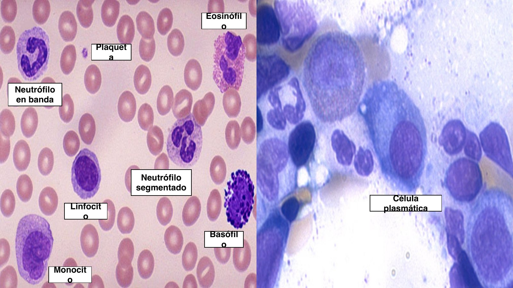
Protetora
Leva ao foco as armas que estão dentro dos vasos: leucócitos, anticorpos, complemento.
Mas "cega"
As mesmas enzimas e radicais lesam tecido normal: AR, aterosclerose, asma, anafilaxia.
Os 5 R do Robbins: reconhecimento (TLR) → recrutamento → remoção → regulação → resolução/reparação (os slides cobrem os do meio). Sufixo "-itis" = inflamação do órgão.
| INFLAMACIÓN AGUDA (inmunidad innata) | INFLAMACIÓN CRÓNICA (inmunidad adaptativa) | |
|---|---|---|
| Tiempo | Respuestas rápidas (minutos u horas), duración breve (horas a pocos días); resolución espontánea | Duración prolongada, mayor destrucción tisular |
| Característica 1 | Exudado de fluidos y proteínas plasmáticas (edema) | Proliferación de vasos sanguíneos y depósito de tejido conjuntivo |
| Característica 2 | Migración de LEUCOCITOS POLIMORFONUCLEARES (neutrófilos) | LEUCOCITOS MONONUCLEARES (linfocitos y macrófagos) |
Se a resposta aguda não erradica o estímulo, evolui para crônica. O slide cita DM e Alzheimer como doenças com inflamação crônica de baixo grau.
| Aguda | Crónica | |
|---|---|---|
| Imunidade | inata: rápida, igual para todos | adaptativa |
| Quando | horas a dias, agente eliminado | agente persiste (TB, corpo estranho, autoimunidade) |
| Células | neutrófilos + edema | linfócitos, plasmócitos, macrófagos |
| Tecido | exsudado | destruição + reparo: angiogênese, fibrose |
Lo que dijo la Dra. en la clase de repaso · introdução, causas, aguda × crónica
«Siempre que ustedes encuentren el término de ITIS, pues ya van a relacionar con la respuesta inflamatoria.»
«Es a partir de los vasos sanguíneos que los leucocitos van a migrar hacia los tejidos… vamos a tener una respuesta en tejidos vascularizados.»
Sobre o esquema de abertura (Robbins 10ª): ela disse que ele resume toda a matéria: estímulo → células sentinela liberam mediadores → mudanças vasculares → recrutamento de leucócitos → eliminação do agente → reparação. A reparação acompanha tanto a aguda quanto a crônica e pode ser por regeneración ou por cicatrización.
«La que caracteriza a la inflamación crónica es la reparación por cicatrización. En la aguda… podemos encontrar la regeneración, pero también puede acompañarse de un depósito de matriz extracelular o bien una inflamación aguda que se perpetúa y pasa a una inflamación crónica.»
Causas (lista completa, sem dividir aguda/crônica): infecções; necrose de qualquer etiologia («las necrosis se acompañan de un proceso inflamatorio», pela rotura da membrana); cuerpos extraños (astillas, hilos de sutura, fibras vegetais inaladas e o colesterol da íntima na aterosclerose, reconhecido como corpo estranho); reacciones inmunitarias / hipersensibilidad (autoimunes, alergias, tuberculose = hipersensibilidad tipo IV).
«En las reacciones inmunitarias y en los cuerpos extraños nosotros vamos a encontrar un proceso inflamatorio crónico.»
«Hagan un cuadro donde puedan diferenciar una inflamación aguda de una inflamación crónica.»
| Cuadro dela | AGUDA | CRÓNICA |
|---|---|---|
| Inmunidad | Innata | Adaptativa |
| Tempo | Rápida: minutos u horas; duración breve; resolución espontánea | Meses ou anos; prolongada; mayor destrucción tisular |
| Característica 1 | Cambios vasculares: vasodilatación + aumento de permeabilidad → exudado rico en células y proteínas (edema) | Reparación por cicatrización: proliferación de vasos (neovascularización / angiogénesis) + depósito de tejido conjuntivo (predomina colágeno) |
| Característica 2 | Infiltrado de leucocitos polimorfonucleares: neutrófilos (1º dia), depois macrófagos | Leucocitos mononucleares: linfocitos, macrófagos, células plasmáticas |
| Reparação | Em geral regeneración (depende do tecido e do estímulo) | Cicatrización |
Dicas dela no cuadro: "polimorfonuclear" grande («Grande, menciono polimorfonuclear»), e especificar a célula: neutrófilos. Se a pergunta é "respuesta celular" → quais células; se é "cambios vasculares" → na aguda são dois; na crônica o "cambio vascular" é a angiogénesis dentro da reparação. A célula plasmática é para lembrar como marca de infiltrado crônico.
Asma aparece nas duas colunas do esquema do Robbins: é doença inflamatória crônica com crises agudas. Diabetes, Alzheimer e aterosclerose não são "itis", mas têm inflamação na patogenia.
1.1 Signos cardinales
| Signo | Causa vascular / mediador |
|---|---|
| Rubor y calor | Vasodilatación (histamina, prostaglandinas) |
| Tumor | Aumento de permeabilidad → edema (histamina, serotonina, bradicinina, PG) |
| Dolor | Prostaglandinas y bradicinina |
| Pérdida de función | Dor + edema + lesão tecidual (Virchow) |
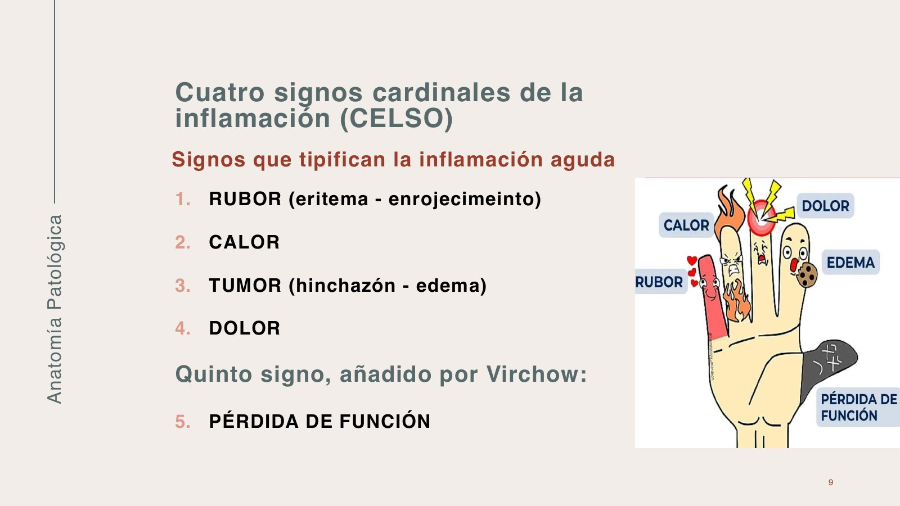
Lo que dijo la Dra. en la clase de repaso · signos cardinales
«La familia OR: rubor, calor, tumor, dolor… y le agregamos un quinto signo, Virchow ha añadido uno más, que es la pérdida de función.»
«Cuando mencionamos la vasodilatación, el cambio que nos deja evidenciar es el rubor… también podemos mencionar el calor… A nivel local; ahora bien… también podemos tener una respuesta sistémica, y esa respuesta sistémica es la fiebre.»
«El tumor viene de tumefacción… no necesariamente estamos hablando de una masa… lo que nos va a indicar es la hinchazón, es el edema.»
«Yo en la prueba no voy a preguntar cuáles son los signos cardinales… Lo más probable es que yo llegue a preguntar cuáles son los signos que vamos a encontrar como respuesta a los cambios vasculares… o cuáles van a ser los signos cardinales que se van a poder observar con la vasodilatación.»
Como ela vai perguntar: "Cite los signos cardinales resultantes de la vasodilatación" → rubor y calor. "Signo resultante del aumento de permeabilidad" → tumor (edema). Dor → mediadores químicos (PG e bradicinina). Estude a relação signo ↔ mudança vascular ↔ mediador, não a lista decorada.
1.2 Reacciones de los vasos sanguíneos
1. Cambios en el flujo y calibre de los vasos
2. Aumento de permeabilidad microvascular (extravasación)
Por que vênulas? Lá estão os receptores e as junções mais frouxas. Lesão endotelial direta (queimadura, toxinas): vazamento imediato e prolongado, também em capilares e arteríolas. Na reparação, o VEGF forma vasos que vazam (transcitose).
Lo que dijo la Dra. en la clase de repaso · cambios vasculares passo a passo
«A mí me gusta englobar lo que es el número uno y el número dos dentro de los cambios vasculares. Porque los dos involucran a los vasos sanguíneos.»
«Los vasos que están involucrados pues son pequeños vasos… arteriolas, capilares y vénulas. Esta vasodilatación… genera un aumento del flujo sanguíneo… un aumento del volumen sanguíneo.»
«No es el primer cambio vascular que vamos a encontrar… Antes de la vasodilatación encontramos una vasoconstricción transitoria… dura unos segundos… no está aquí porque no es característico.»
«Si se les pregunta por cambios vasculares… o primer cambio vascular, pues el primer cambio vascular es la vasoconstricción. Luego aparece esa vasodilatación.»
Atenção à palavra da pergunta: "cambios característicos" → vasodilatación + permeabilidad. "Primer cambio vascular" → vasoconstricción. Ela reforça que tudo ocorre rápido e quase simultâneo; a numeração é só didática.
«El principal mediador… en la primera instancia, es la histamina… ¿de dónde salió la histamina? … a nivel tisular encontramos a los mastocitos… son ellos los que se encargan de liberar esta histamina.»
«Lo que afecta son las arteriolas… vasodilatación arteriolar. La histamina actúa sobre la musculatura lisa vascular. Después… viene una apertura de nuevos lechos capilares.»
«Eritema es el rubor. … facilítenle al cerebro aquí, colóquenle enrojecimiento.»
«Cuando hablamos… de un flujo sanguíneo aumentado, nosotros no estamos hablando de la velocidad del flujo, estamos hablando del volumen… ese aumento del flujo hace que la velocidad se disminuya… éstasis sanguínea.»
Por que a estase importa (ela destacou): com mais volume e menos velocidade, hemácias e leucócitos se concentram; isso é o que permite ao leucócito se aproximar do endotélio, atravessá-lo e chegar ao tecido.
«El principal mecanismo del aumento de permeabilidad es la contracción de las células endoteliales… aumentan los espacios interendoteliales.»
«El sitio donde vamos a encontrar este aumento de permeabilidad son en las vénulas poscapilares… ¿alguna vez vieron una vénula que esté antes de los capilares? … Si encuentran precapilares, eso es un distractor.»
«Si yo pregunto en qué parte de los vasos sanguíneos vamos a encontrar la migración de leucocitos, pues va a ser lo mismo, va a ser en las vénulas poscapilares.»
Os 3 mecanismos de aumento de permeabilidade (resposta completa): contracción de células endoteliales (o mais frequente), lesión endotelial (dano direto ou pela adesão/passagem dos neutrófilos) e transcitosis (transporte de líquido e proteínas através da célula, regulado pelo factor de crecimiento endotelial vascular).
«Nosotros hablamos de contracción… y aquí encontramos retracción… Nuestro libro de base, que es el Robbins, menciona como lo mismo… en el Harsh Mohan… la contracción no genera cambios estructurales… y en la retracción sí… Quedamos con el Robbins: contracción, retracción, utilizaremos como lo mismo.»
«Recuerden que los dibujos o los esquemas que aparecen no son para llenar espacios, esto sirve para estudiar.»
No esquema "normal" ela quer que você note o flujo sanguíneo laminar: as células correm no centro do vaso e não tocam a parede. É por isso que a marginación (sair do centro para a margem) é o primeiro passo do recrutamento.
1.3 Exudación, edema, exudado × trasudado
Exsudato × transudato
Características
- Proteínas bajas, pocas células
- Densidad baja, aspecto claro
- Mecanismo: presión hidrostática u osmótica
- Ej.: insuficiencia cardíaca, hipoalbuminemia
Características
- Proteínas altas, muchas células
- Densidad alta, aspecto turbio
- Mecanismo: ↑ permeabilidad vascular
- Ej.: neumonía, pus
Pus
- Exudado purulento
- Neutrófilos + restos necróticos + microbios
| EXUDADO | TRASUDADO | |
|---|---|---|
| Definición (slide) | Líquido extravascular con concentración elevada de proteínas y abundante restos celulares | Ultrafiltrado de plasma, líquido con bajo contenido de proteínas (albúmina, mayoría), material celular escaso o nulo y baja densidad |
| Mecanismo | Aumento de permeabilidad de los vasos pequeños (inflamación) | Desequilibrio osmótico o hidrostático (sin inflamación) |
| Aspecto | Turbio | Claro, seroso |
| Ejemplo | Pus, derrame por neumonía | Insuficiencia cardíaca, hipoalbuminemia |
PUS: exudado inflamatorio purulento, rico en leucocitos (sobre todo neutrófilos), restos de células muertas y muchas veces, microbios.
Pressão hidrostática empurra para fora; oncótica (albumina) segura dentro. Normalmente quase se anulam (slide: 32, 25, 12 mmHg).
| Transudado | Exudado | |
|---|---|---|
| Vaso | íntegro, balança alterada | furado pela inflamação |
| Causa | ↑ hidrostática (IC, trombose venosa) ou ↓ oncótica (hipoalbuminemia: cirrose, nefrótica, desnutrição) | inflamação |
| Conteúdo | água e sal | água, fibrinógeno, células |
| Aspecto | claro | turvo; com neutrófilos e restos = pus |
| Densidade | < 1,012 | > 1,020 |
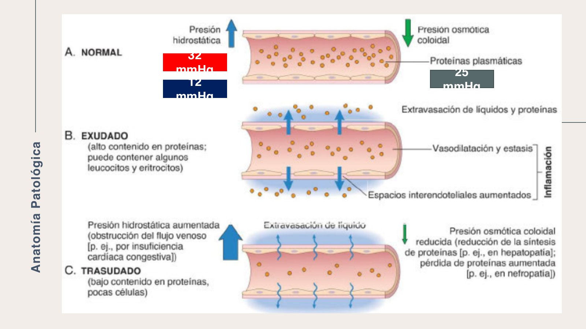
Lo que dijo la Dra. en la clase de repaso · exudación, edema, trasudado × exudado, pus
«Exudación no es lo mismo que el edema. El edema ya corresponde a un exceso de extravasación del líquido.»
«El líquido extravasado característico de la inflamación aguda es el exudado. No significa que no puedan encontrar trasudado. El característico es el exudado.»
«Tienen aquí otro cuadrito a realizar. Un cuadrito de diferencia entre exudado y trasudado… Y mencionen cuáles son los mecanismos que están relacionados a cada una.»
| Cuadro dela | TRASUDADO | EXUDADO |
|---|---|---|
| O que é | Ultrafiltrado de plasma | Líquido inflamatório |
| Células / proteínas / densidade | Bajo contenido celular, bajo contenido proteico, baja densidad | Muchas proteínas, muchas células, densidad aumentada |
| Aspecto | Claro | Turbio |
| Mecanismo | Alteraciones de la presión osmótica o hidrostática (escrito em vermelho no slide); obstrução linfática | Aumento de la permeabilidad vascular |
«¿Por qué menciono transudado primero? Porque aquí hablamos de un ultrafiltrado de plasma… un líquido con bajo contenido celular, con bajo contenido proteico, con baja densidad.»
«El pus… es un exudado purulento, rico… en células… los neutrófilos… vamos a encontrar tanto el proceso inflamatorio como el proceso necrótico… necrosis licuefactiva con la presencia de microorganismos, principalmente las bacterias.»
O esquema de pressões do Robbins (normal / trasudado / exudado) é, segundo ela, o «esquemita maravilloso» para montar esse cuadro. No exsudado inflamatório ela lembra que o líquido é rico em proteínas e leucócitos e pode conter eritrócitos.
Respuestas de vasos y ganglios linfáticos
Filtran y limpian los líquidos extravasculares. Flujo linfático aumentado. También los leucocitos, residuos celulares y microbios pasan a la linfa. 1. Linfangitis: inflamación secundaria de los vasos linfáticos. 2. Linfadenitis: inflamación secundaria de los ganglios linfáticos (hiperplasia de los folículos y mayor número de linfocitos y macrófagos).
Lo que dijo la Dra. en la clase de repaso · linfáticos
«Como hablamos de un flujo sanguíneo aumentado, el flujo linfático también va a estar aumentado… se van a encargar de la limpieza.»
«Una inflamación de los vasos linfáticos… linfangitis. Si los ganglios linfáticos se encuentran inflamados… linfadenitis.»
Exemplos que ela deu: linfadenitis = gânglios cervicais aumentados e palpáveis numa faringoamigdalitis (adenomegalia por hiperplasia de folículos). Linfangitis = linhas vermelhas na pele saindo de um foco inflamatório cutâneo, visíveis a olho nu. (Ela disse "vasos sanguíneos inflamados" nesse trecho, mas as linhas são os vasos linfáticos; é isso que se chama linfangite.)
- "Toracocentesis, líquido amarillo ligeramente turbio con múltiples neutrófilos; ¿qué mecanismo contribuye?" → contracción endotelial (aumento de permeabilidade). Um aluno respondeu "falha do sistema linfático"; está errado. Obstrução linfática não traz neutrófilos.
- Indica exsudado: alto contenido de proteínas. Indica transudado: recuento bajo de leucocitos, aspecto claro, baixa densidade.
- Líquido turvo, 98% neutrófilos, cocos gram+ → exudado purulento (não "absceso": absceso é coleção localizada dentro de um tecido).
- "Cambio vascular responsable de la extravasación" → aumento de la permeabilidad vascular, não vasodilatação.
- "Dos cambios vasculares característicos" → vasodilatación y aumento de permeabilidad. Vasoconstricção é transitória e não é característica (a professora escreveu isso na correção).
1.4 Reclutamiento de leucocitos
Trajeto do leucócito, passo a passo
1. Marginación
- Redistribución hacia la periferia
- Depende de la estasis
2. Rodamiento
- Adherencia débil, transitoria
- Selectinas (E, P)
3. Adhesión
- Adherencia firme
- Integrinas (β2), activadas por quimiocinas
4. Transmigración
- = diapédesis = migración
- Vénulas poscapilares
- Espacios interendoteliales
- Inmunoglobulinas (PECAM-1/CD31)
5. Quimiotaxia
- Desplazamiento por los tejidos hacia la lesión
- Exógenos: productos bacterianos
- Endógenos: interleucina 8, C5a, leucotrieno B4
6. Fagocitosis
- Reconocimiento y fijación
- Atrapamiento → fagolisosoma
- Destrucción: especies reactivas de oxígeno, óxido nítrico, enzimas lisosómicas
En la luz: marginación → rodamiento → adhesión. En la pared: transmigración. En el tejido: quimiotaxia → fagocitosis.
Truco: Selectina = se desliza (rueda) · Integrina = se inmoviliza (para) · PECAM = pasa.
- Marginación: redistribución leucocitaria; los leucocitos adoptan una posición periférica a lo largo de la superficie endotelial. Depende de la estasis (física): o sangue fica lento e os glóbulos brancos saem do centro da corrente.estasis
- Rodamiento: se adhieren de manera transitoria al endotelio, se desprenden y se vuelven a unir (como uma bola rolando no velcro).SELECTINASE-selectinaP-selectina
- Adhesión: finalmente quedan en reposo en algún punto en el que se adhieren con firmeza. As integrinas do leucócito são ativadas por quimiocinas.INTEGRINAS (β2)activadas por quimiocinas
- Transmigración = diapédesis = migración: atraviesa el endotelio por los espacios interendoteliales, principalmente en las vénulas poscapilares, a favor del gradiente químico.INMUNOGLOBULINASPECAM-1 / CD31
Distrator clássico: "precapilares" está errado. - Quimiotaxia: movimiento a favor del gradiente quimiotáctico; desplazamiento por los tejidos hacia el sitio de lesión.Exógenos: productos bacterianosIL-8C5aLTB4
- Fagocitosis en 3 pasos: reconocimiento y fijación → atrapamiento (fagolisosoma) → destrucción.ERO (especies reactivas de oxígeno)óxido nítricoenzimas lisosómicas
| Paso | Definición del slide | Molécula |
|---|---|---|
| 1. Marginación | Proceso de redistribución leucocitaria. Los leucocitos adoptan una posición periférica a lo largo de la superficie endotelial. | Estasis (física) |
| 2. Rodamiento | Los leucocitos se adhieren de manera transitoria al endotelio, se desprenden y se vuelven a unir. | SELECTINAS (E-selectina, P-selectina) |
| 3. Adhesión | Finalmente, quedan en reposo en algún punto en el que se adhieren con firmeza. | INTEGRINAS (β2) |
| 4. Migración (TRANSMIGRACIÓN o DIAPÉDESIS) | Reclutamiento de leucocitos a través del endotelio. VÉNULAS POSCAPILARES (principalmente). Migran a través de los espacios interendoteliales a favor del gradiente de concentración química. | INMUNOGLOBULINAS (PECAM-1/CD31) en las uniones intercelulares |
| 5. Quimiotaxia | Movimiento a favor del gradiente quimiotáctico creado por las quimiocinas y otros quimiotácticos. Desplazamiento de los leucocitos por los tejidos hacia el sitio de lesión. | Exógenas: productos bacterianos. Endógenas: citocinas (IL-8), complemento (C5a), metabolitos del ácido araquidónico (LTB4) |
| 6. Fagocitosis | "Activación de leucocitos": reconocer los agentes causales; fagocitosis y destrucción intracelular. | 3 pasos: reconocimiento y fijación · atrapamiento (fagolisosoma) · destrucción (ERO, NO, enzimas lisosómicas) |
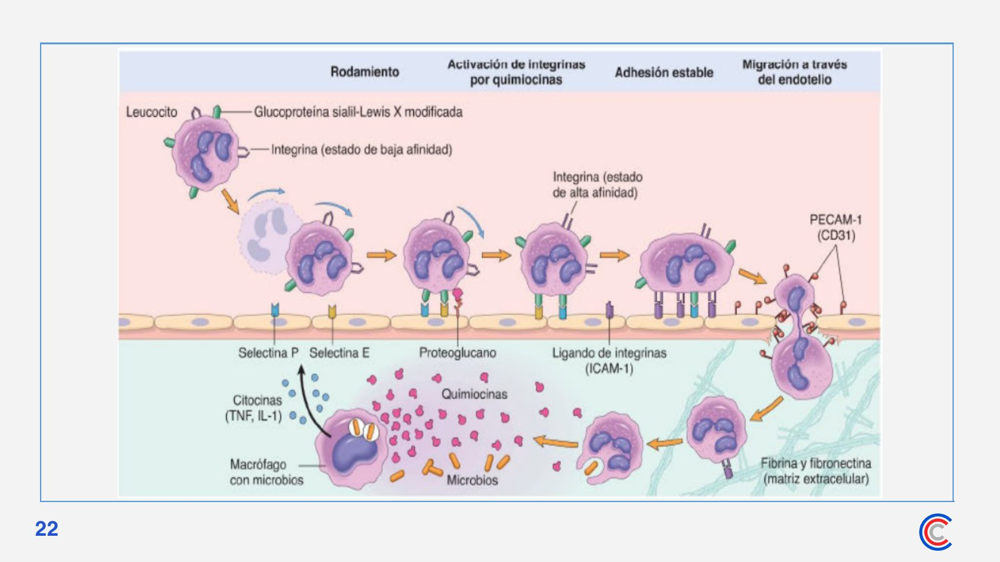
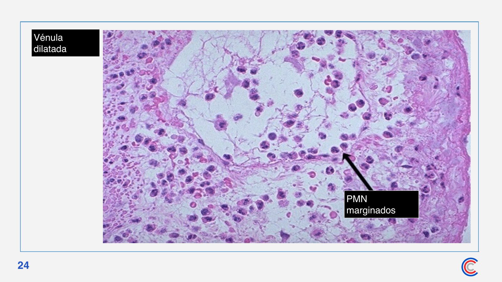
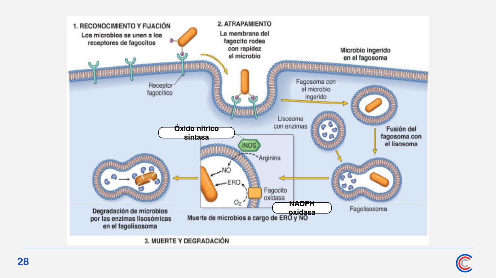
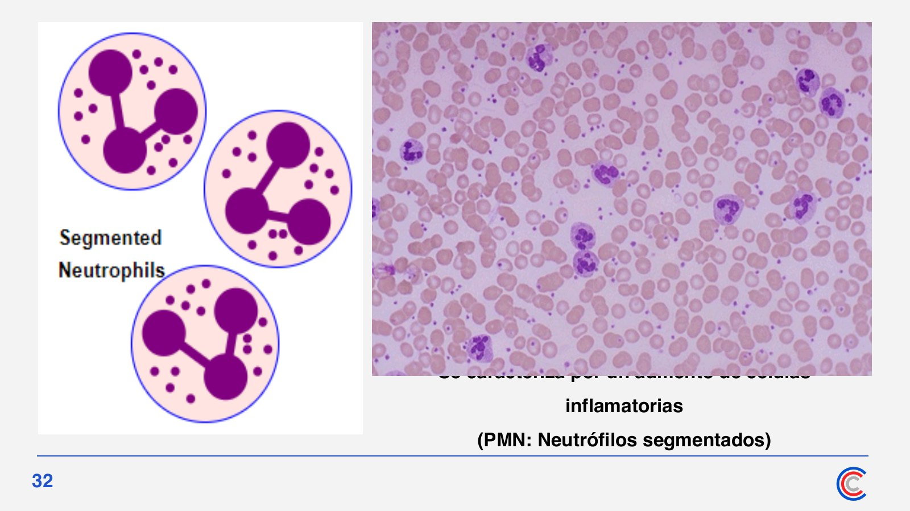
| Etapa | Molécula | O que acontece |
|---|---|---|
| 1 · Marginación | — (física) | com a estase, leucócitos são empurrados para a parede |
| 2 · Rodamiento | selectinas: P (minutos), E (1–2 h) ↔ sialil-Lewis X | liga e solta: "se colocan sobre el endotelio de forma transitoria" |
| 3 · Adhesión firme | β2-integrinas (LFA-1, Mac-1) ↔ ICAM-1 | quimiocinas ativam as integrinas; o leucócito para |
| 4 · Transmigración | PECAM-1 (CD31) | passa entre células endoteliais nas vénulas poscapilares; colagenases na membrana basal |
| 5 · Quimiotaxis | IL-8, C5a, LTB4; bacterianas: N-formil-metionina | segue o gradiente com pseudópodes |
LAD tipo 1
Falta β2-integrina: rolam mas não param. Neutrofilia no sangue, sem pus.
LAD tipo 2
Falta sialil-Lewis X: nem rolam.
Como o neutrófilo mata: a NADPH oxidasa gera superóxido → peróxido de hidrogênio (H₂O₂); a mieloperoxidasa converte H₂O₂ em hipoclorito (HOCl), o oxidante mais potente. Por isso, na pneumonia por S. pneumoniae, a substância produzida pelo neutrófilo que elimina a bactéria é o peróxido de hidrógeno.
Por que o neutrófilo chega primeiro?
Mais numeroso, mais rápido às quimiocinas, adesão mais firme. Vive pouco: em 24–48 h morre por apoptose → monócito/macrófago. "6–24 h × 24–48 h".
Dano colateral
Enzimas e radicais soltos para fora (fagocitose frustrada, imunocomplexos) destroem tecido: absceso, doenças por imunocomplexos.
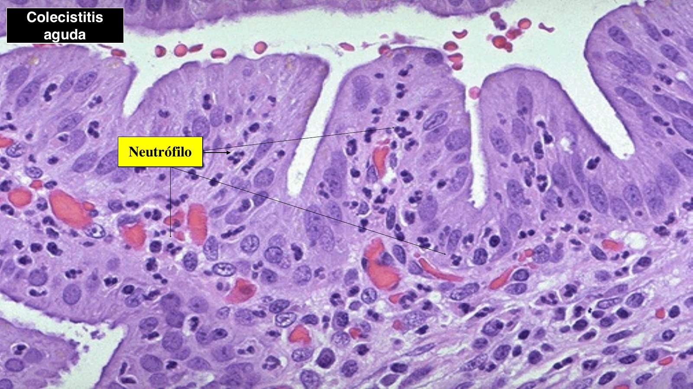
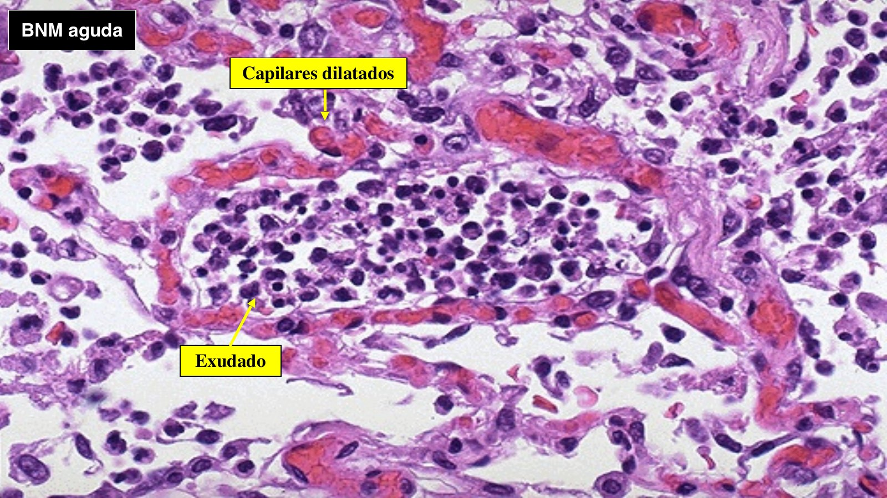
Lo que dijo la Dra. en la clase de repaso · reclutamiento de leucocitos
«Nuestros principales leucocitos son los fagocitos. ¿Quiénes son ellos? Los neutrófilos y los macrófagos. ¿Cuál es la función que deben cumplir? Eliminar al agente agresor.»
«Vamos a tener… a los macrófagos M1, que son los que se encargan de esa destrucción de agentes causales… y luego tenemos a los macrófagos M2, que son los que participan en el proceso de reparación y secretan ese factor de crecimiento.»
«Todos los cambios a nivel vascular y estos pasos… están regulados por… los mediadores químicos… las moléculas de adhesión, las citocinas, y dentro de las citocinas… las quimiocinas.»
«En la luz de los vasos tenemos tres pasos, la marginación, el rodamiento y la adhesión al endotelio. A través de la pared vascular… la transmigración o diapedesis. En los tejidos… la quimiotaxis o quimiotaxia y el proceso de fagocitosis. Por supuesto que esto es tema de prueba.»
«Cuidado, si es que les pregunta de forma específica… por los pasos del reclutamiento de leucocitos en la luz vascular… O si les pregunta en la región tisular… si esto es algo específico, mi respuesta debe ser específica. Ya ha caído en prueba y por supuesto volverá a caer.»
| Onde | Passo | Molécula | Imagem dela |
|---|---|---|---|
| Luz vascular | 1. Marginación (redistribución leucocitaria) | (estase, física) | Sai do centro do fluxo laminar "ao margem" da parede |
| 2. Rodamiento (adherencia débil, transitoria) | Selectinas | "Aplicarle freno": gruda e desgruda enquanto rola | |
| 3. Adhesión (adherencia firme, en reposo) | Integrinas (ativadas pelas quimiocinas) | Parou | |
| Através da parede | 4. Migración / transmigración / diapedesis | Inmunoglobulinas (uniones intercelulares) | "Pasar de un país a otro país": da luz para o tecido |
| Tecido | 5. Quimiotaxia | Quimiocinas e outros quimiotácticos | "Turista perdido": as quimiocinas são os guías turísticos |
| 6. Fagocitosis | ERO, óxido nítrico, enzimas lisosómicas | Chegou ao agente e elimina |
«Cuidado porque lo que suelen confundir es marginación con migración… si hablo de migración, está pasando de la luz vascular al tejido… De un país a otro país. No es lo mismo que marginación.»
«Atiendan y lean muy bien en su examen. Porque el cerebro nos engaña… leen como marginación y ha sido lo que decía, era migración… son los errores que frecuentemente se cometen en la prueba.»
«Selectinas, rodamiento, integrinas en la adhesión… están resaltadas porque son temas de prueba… Están expresadas en leucocitos y en las células endoteliales.»
«La migración ocurre en las vénulas poscapilares principalmente… además de la contracción… las vénulas tienen paredes delgadas.»
«Palabra clave, migración, desplazamiento… este desplazamiento es a través del endotelio, así que márquenle eso… porque yo voy a hablar también de un desplazamiento a nivel tisular, y eso es la quimiotaxis.»
A diferença que ela mandou marcar em amarelo: as duas definições falam em "desplazamiento" e "gradiente". Migración = a través de los espacios interendoteliales / del endotelio. Quimiotaxia = por los tejidos hacia el sitio de lesión. Na prova, procure a expressão de lugar.
«Las sustancias exógenas, que son potentes quimiotácticos, pues corresponden a los productos bacterianos… sustancias endógenas… la quimiocina es la interleucina 8… el sistema del complemento… C5a… metabolitos del ácido araquidónico… el leucotrieno B4… por la vía de la lipoxigenasa.»
«Esto de interleucina o leucotrieno, ustedes sí tienen que escribir todo… Interleucina 8, leucotrieno B4… Ahora, C5a es C5a, al punto.»
«Ustedes tienen que escribir todo, ustedes no van a colocar ERO nada más: especies reactivas de oxígeno, óxido nítrico y enzimas lisosómicas. Son esos los mediadores que participan en el proceso de fagocitosis.»
Fagocitose em 3 passos (ela repetiu duas vezes): 1. reconocimiento y fijación (receptores fagocíticos); 2. atrapamiento: a membrana do leucócito envolve a partícula → vacuola fagocítica (fagosoma), que se une ao lisossomo → fagolisosoma; 3. destrucción y degradación: arginina → óxido nítrico (óxido nítrico sintasa); fagocito oxidasa / NADPH oxidasa → especies reactivas de oxígeno; enzimas lisosómicas degradam. Ela recomendou ler essa parte no Robbins porque o slide está resumido.
«Los neutrófilos… predominan en el primer día… Son los más numerosos en la sangre, responden rápidamente y se adhieren con mayor firmeza a las moléculas de adhesión… tienen una vida corta, sufren apoptosis, desaparecen… y ahí aparecen los macrófagos.»
Excepciones que ela mandou lembrar: Pseudomonas → neutrófilos persistem vários dias; infecciones virales → os linfocitos chegam primeiro; hipersensibilidad → células mononucleares (linfócitos ativados, macrófagos, plasmócitos); alergias → eosinófilos.
Nas lâminas: em esfregaço, neutrófilos segmentados (3 lóbulos) e também em banda (típico da inflamação aguda, pela maior demanda). Na colecistitis aguda os PMN estão na lâmina própria e no epitélio. Na bronconeumonía aguda, se os neutrófilos no exsudado parecem mononucleares, olhe o campo todo: capilares alveolares dilatados (vasodilatación) + alvéolos cheios de exsudado (aumento de permeabilidad). Na vénula dilatada com PMN encostados na parede você só pode dizer leucocitos marginados; numa foto não dá para saber se estão rolando ou aderidos.
- Ordem: a única sequência certa nas opções foi "Rodamiento, adhesión, diapédesis/migración". "Marginación, adhesión, rodamiento" está fora de ordem.
- Adesão firme = integrinas. Rodamento (transitório) = selectinas. A frase dela "leucocitos de forma individual y en filas se colocan sobre el endotelio de forma transitoria" descreve rodamento → resposta aceita: E-selectina.
- Se a frase é "redistribución leucocitaria... posición periférica" → marginación.
- Deficiência de β2-integrina → adhesión neutrofílica inadecuada al endotelio. A opção "fracaso del proceso en el cual los leucocitos se colocan sobre el endotelio de forma transitoria" é o rodamento (selectinas), é o distrator.
- Fases na luz: marginación, rodamiento, adhesión. Fases no tecido: transmigración (diapédesis), quimiotaxia. Ela pede "2 pasos en la luz" e "2 pasos en el tejido" em questões diferentes.
- O local da migração é a vénula poscapilar, não o capilar.
- Os 2 fagócitos principais são neutrófilos y macrófagos. Um aluno escreveu "mastocitos"; mastócito não é fagócito principal.
- Quimiotáticos endógenos: IL-8, C5a, LTB4. Produtos bacterianos são exógenos. "Movimiento de los leucocitos por los tejidos al sitio de lesión por productos bacterianos" → quimiotaxia.
1.5 Patrones morfológicos de la inflamación aguda
Organograma dos padrões morfológicos
Claves
- Exudación tipo trasudado
- Sin microorganismos
- Ampollas (quemadura, fricción)
- Infecciones virales
- Cavidades: pleura, pericardio, peritoneo
Claves
- Sale fibrinógeno → fibrina
- MO: red eosinófila
- Meninges, pericardio, pleura
- Pericarditis en pan con mantequilla
- Si persiste: organización → cicatriz
Claves
- Neutrófilos + necrosis licuefactiva
- Bacterias piógenas: S. aureus
- Apendicitis aguda
Absceso
- Colección localizada de pus
- Pared fibrosa con el tiempo
- Rx: nivel hidroaéreo
Claves
- Excavación, solución de continuidad
- Mucosa digestiva, genitourinaria, piel
- Úlcera péptica, pie diabético
- Coexisten aguda y crónica
Líquido com poucas células, sem micro-organismos destrutivos, em espaços criados pela lesão ou em cavidades (pleura, pericárdio, peritônio). Ex.: ampollas cutáneas por queimadura ou infecção viral.
A permeabilidade é maior: sai fibrinógeno que vira fibrina. Revestimento de cavidades (meninges, pericárdio, pleura). Ex.: pericarditis en "pan con mantequilla". Se não é removida: organização → cicatriz.
Absceso: coleção localizada de pus; na Rx de tórax, nivel hidroaéreo.
Defeito local (escavação) da superfície por necrose e descamação do tecido inflamado. Mucosa digestiva, geniturinária, pele. Ex.: úlcera péptica, pé diabético. Coexistem aguda e crônica.
Dependiendo de la gravedad de la reacción, de su causa, del tejido y localización afectados: 1. Serosa · 2. Fibrinosa · 3. Purulenta (supurativa), absceso · 4. Úlceras.
| Patrón | Slide | Ejemplo que ela usa |
|---|---|---|
| Serosa | Exudación de líquido con bajo contenido de células en espacios creados por la lesión celular o en cavidades corporales (peritoneal, pleural o pericárdica). Habitualmente, el líquido no está infectado por organismos destructivos y no contiene grandes cantidades de leucocitos. Puede proceder del plasma (incremento de permeabilidad vascular) o de secreciones de células mesoteliales (irritación local). | Ampollas cutáneas: quemaduras o infecciones virales. "Mujer que toca una olla con agua hirviendo, eritema y pequeñas ampollas" |
| Fibrinosa | La permeabilidad vascular es mayor, las moléculas grandes (fibrinógeno) salen de la sangre, formando fibrina que se deposita en el espacio EC. EXUDADO FIBRINOSO. Característico del revestimiento de cavidades corporales (meninges, pericardio y pleura). Puede ser disuelto y erradicado por macrófagos; si no se elimina, crecen fibroblastos y vasos (cicatriz). MO: red eosinófila de fibras o coágulo amorfo. | Pericarditis de "pan con mantequilla"; organización = tejido cicatricial |
| Purulenta (supurativa), absceso | Formación de pus: neutrófilos, residuos licuados de células necróticas y líquido de edema. Causa: INFECCIÓN POR BACTERIAS que causan necrosis licuefactiva (Staphylococos), bacterias piógenas "productoras de pus". | Apendicitis aguda. Absceso: "nivel hidroaéreo" en Rx de tórax |
| Úlceras | Defecto o excavación local en la superficie de un órgano o tejido, inducido por esfacelación (desprendimiento) de tejido necrótico inflamado. Solo se produce en una superficie o cerca de ella. | Mucosa de boca, estómago, intestino, vías genitourinarias; piel de miembros inferiores en ancianos. Úlcera péptica (coexisten aguda y crónica) |
Decidem: quanto o vaso está lesado e quem causou.
Serosa
Lesão leve, líquido tipo soro, pobre em células. Bolha de queimadura de 2º grau, derrame inicial. Reabsorve.
Fibrinosa
Sai fibrinógeno. Serosas (pericárdio, pleura, meninges): "pan con mantequilla", atrito pericárdico. Resolve ou se organiza (aderências).
Purulenta
Bactérias piogênicas + neutrófilos + licuefactiva = pus. Difusa (apendicite, empiema) ou absceso (parede fibrosa: drenar).
Úlcera
Perda de tecido na superfície por necrose. Úlcera péptica: aguda (neutrófilos, fibrina) + crônica (granulação, fibrose).
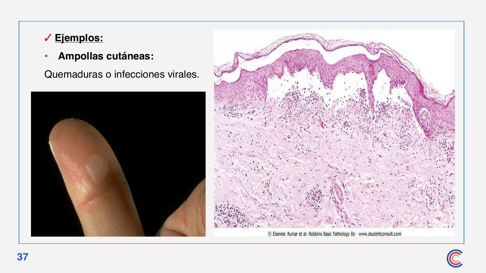
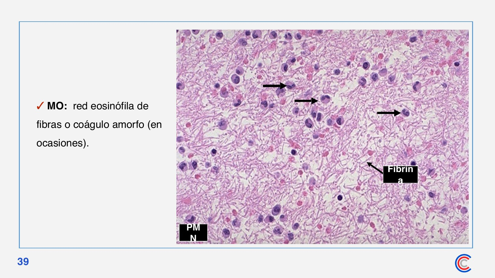
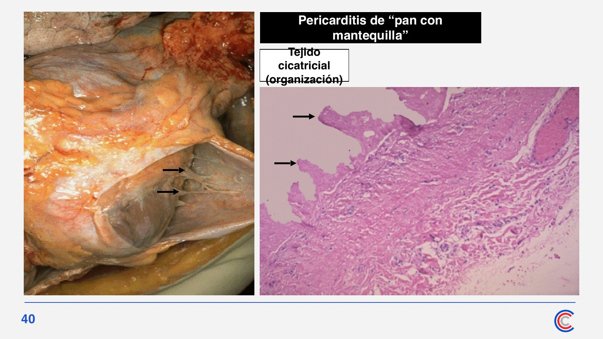
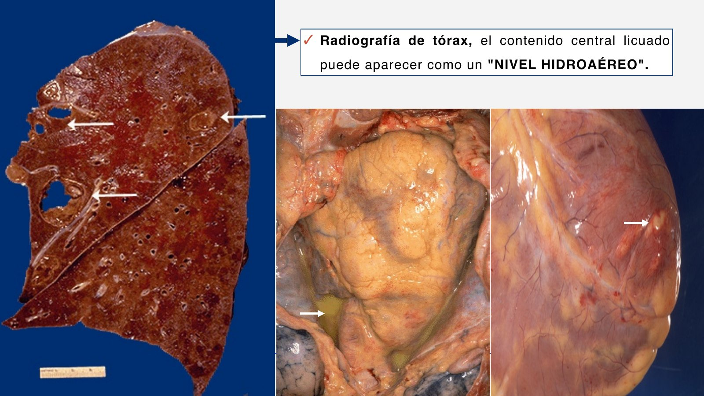
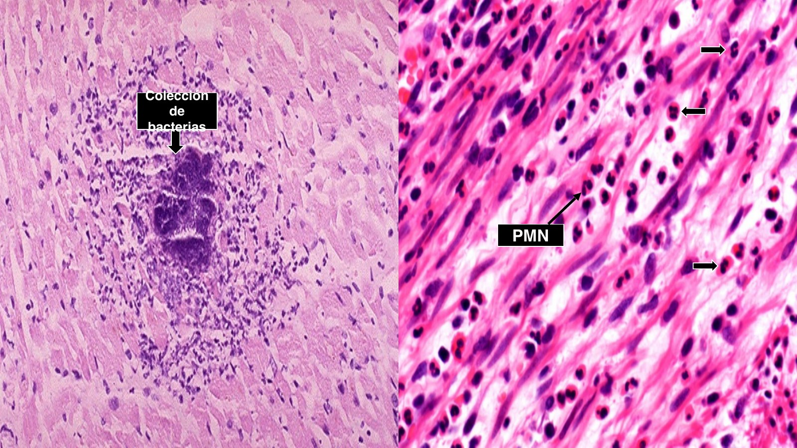
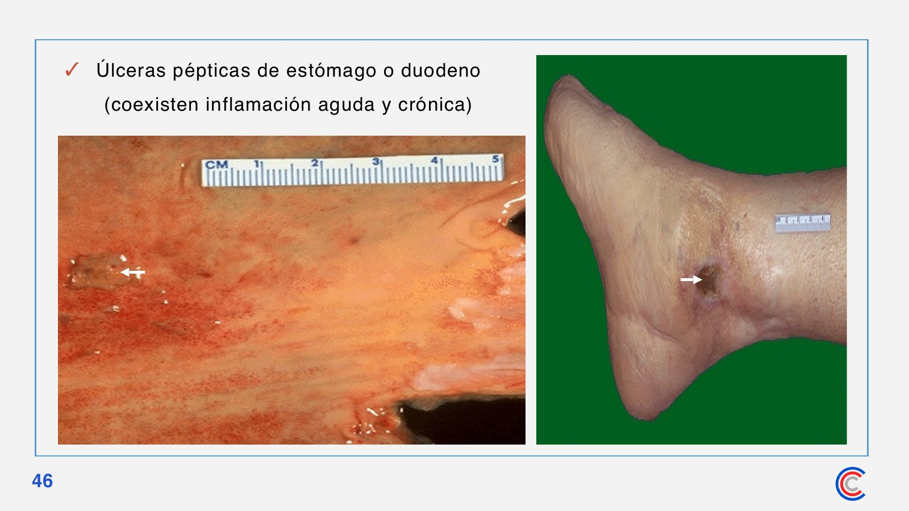
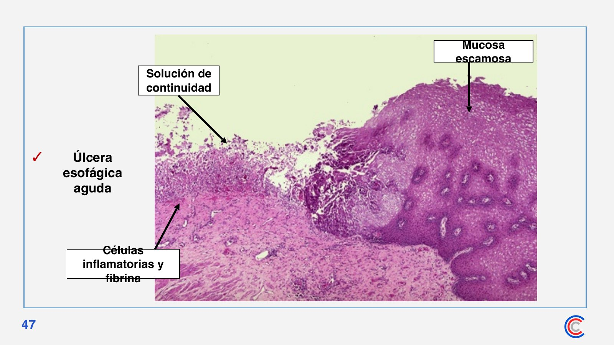
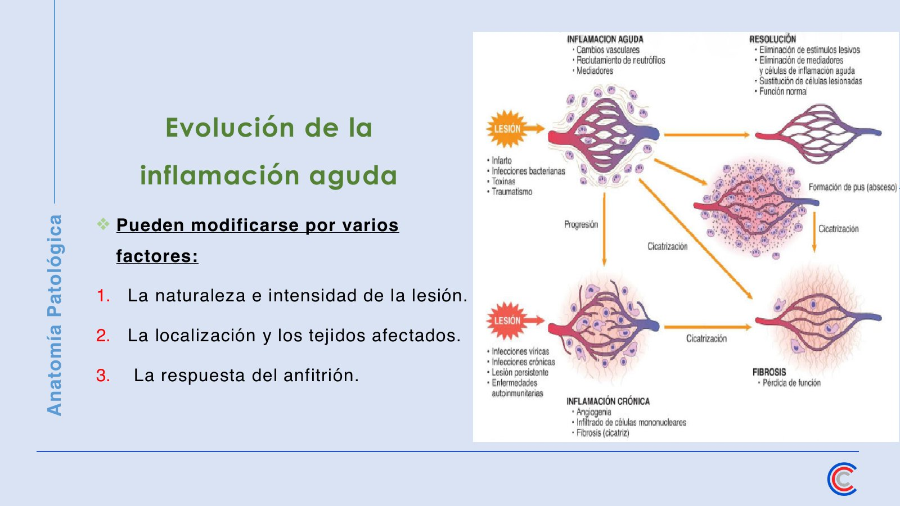
Lo que dijo la Dra. en la clase de repaso · patrones morfológicos
«Purulenta, supurativa… Dos nombres, pues la misma cosa… Pus, purum.»
«Lo que tiene de particular la inflamación serosa es que la exudación… es con bajo contenido de células… pocos leucocitos y… no tiene microorganismos… las características que me está mencionando son las características de un trasudado… Hablamos aquí como una excepción.»
«Ejemplos… las ampollas cutáneas. Estas ampollas pueden ser por fricción… o… por quemaduras… lo que ocurre es una separación de la dermis de la epidermis.»
«Pueden presentarse inflamación serosa en las infecciones virales.»
Serosa ocorre em espaços criados pela lesão (bolha) ou em cavidades (pleural, pericárdica, peritoneal); o líquido vem do plasma (aumento de permeabilidade) ou de secreção das células mesoteliais.
«En la inflamación fibrinosa… un aumento de la permeabilidad que se encuentra mucho más aumentado y esto es lo que permite que las moléculas grandes como el fibrinógeno… pueda extravasarse… va a pasar a fibrina.»
«Microscópicamente… las alargaditas de color eosinófilo… corresponden a fibrina… redes eosinófilas… puede disolverse… o puede persistir y generar cicatrizaciones.»
«Clásico ejemplo de inflamación fibrinosa es la pericarditis de pan con mantequilla. Tiene toda la pinta esto de un tema de prueba, ¿verdad? Así que le vamos a marcar nomás por si acaso.»
Na peça, a fibrina já organizada formou aderências entre as camadas do pericárdio (e com a parede torácica), limitando o funcionamento do coração.
«Purulenta… ¿Cuáles son las células que predominan? Neutrófilos… también vamos a encontrar células necróticas… la causa… infecciones bacterianas… necrosis licuefactiva.»
«Productoras de pus no pueden olvidarse de Staphylococcus aureus… bacterias piógenas… El clásico ejemplo aquí, la apendicitis aguda.»
«Los abscesos son acúmulos localizados de contenido purulento o pus… neutrófilos… restos necróticos… cambios vasculares… proliferación parenquimatosa y fibroblástica… va a quedar rodeado por una pared y va a ser reemplazado por tejido conjuntivo… por el grado de destrucción.»
Absceso na radiografia de tórax: nivel hidroaéreo (pus embaixo, ar em cima na parte já drenada). Exemplo cotidiano dela: espinillas / acné, pus com halo vermelho. Na lâmina do abscesso ela não diferencia as células; vê-se o acúmulo de bactérias, mais basófilo. Na apendicitis aguda os neutrófilos são "lindos", com 3 lóbulos bem visíveis.
«Las úlceras pueden denominar como defectos… excavaciones… solución de continuidad. Cuidado con lo de solución de continuidad, por favor.»
«En las úlceras… coexiste un proceso inflamatorio agudo y un proceso inflamatorio crónico.»
Úlcera: em superfície ou perto dela, mais em mucosa digestiva e genitourinária e pele/subcutâneo (ex.: pé diabético, úlcera gástrica). Na lâmina (úlcera esofágica, epitélio escamoso): destruição do epitélio + restos necróticos + células inflamatórias + fibrina + tecido conjuntivo de reparação. Ela lembrou também: pé necrótico sem infecção = gangrena seca; com sobreinfecção bacteriana = gangrena húmeda.
Evolução da inflamação aguda
Cuándo
- Lesión limitada y breve
- Poca destrucción
- Tejido capaz de regenerar
Cuándo
- Destrucción extensa
- Tejido que no regenera
- Mucha fibrina (organización)
- Absceso
Cuándo
- El agente persiste
- Alteración de la curación
Evolución de la inflamación aguda
Puede modificarse por: 1. La naturaleza e intensidad de la lesión · 2. La localización y los tejidos afectados · 3. La respuesta del anfitrión. Evoluciona de una de 3 formas:
- Resolución completa (remisión): lesión limitada, corta duración, escasa destrucción tisular y células parenquimatosas capaces de regenerarse.
- Curación por sustitución de tejido conjuntivo (cicatrización o fibrosis): destrucción sustancial de tejido, tejidos que no son capaces de regenerarse o hay abundante exudación de fibrina (organización).
- Progresión a inflamación crónica: la inflamación no remite, por persistencia del agente lesivo o alteración en la curación.
Pergunta-chave: o tecido regenera e o estroma foi preservado?
Resolución
Agressão curta, tecido que regenera (pneumonia lobar tratada).
Cicatriz
Muita necrose, tecido permanente, fibrina demais.
Cronificación
Agente persiste (TB, corpo estranho).
Absceso
Aguda que não resolveu e está sendo isolada.
Lo que dijo la Dra. en la clase de repaso · evolución
«Esa inflamación aguda, si no se elimina el estímulo, puede progresar a una inflamación crónica… O bien, la destrucción ser tan importante que el proceso de reparación… debe ser por una cicatrización. Todo esto va a depender… del estímulo… del tejido afectado y la respuesta del anfitrión.»
As 3 evoluções com o gatilho de cada uma (ela listou assim): resolución completa (remisión) → lesão limitada e tecido que regenera; curación por sustitución de tejido conjuntivo → destruição extensa, tecido sem capacidade de regenerar, ou inflamação fibrinosa (organização da fibrina), ou abscesso; progresión a inflamación crónica → o agente lesivo não é eliminado.
1.6 Mediadores de la inflamación
Organograma dos mediadores
Aminas vasoactivas
- Histamina (mastocitos): vasodilatación + permeabilidad
- Serotonina: solo permeabilidad
Enzimas lisosomales
- Lesión tisular, destrucción en la fagocitosis
Prostaglandinas
- Vasodilatación, dolor, fiebre
- Vía ciclooxigenasa (AINE)
Leucotrienos
- LTB4: quimiotaxia
- LTC4, D4, E4: permeabilidad ("CDE")
Citocinas
- TNF, IL-1: reclutamiento, fiebre
- IL-6: fiebre
- IL-8: quimiotáctica
Complemento
- C3a, C5a: anafilotoxinas
- C5a: quimiotaxia
- C3b: opsonina
- C5b-9: MAC, lisis
Cininas
- Bradicinina: permeabilidad, vasodilatación, dolor
Coagulación
- Poca importancia para ella
| Origen | Tipo | Mediadores | Fuente |
|---|---|---|---|
| DERIVADOS DE CÉLULAS | Preformados (en gránulos) | Histamina · Serotonina · Enzimas lisosomales | Macrófagos, células dendríticas, mastocitos, plaquetas, neutrófilos, CE |
| Sintetizados de novo | Prostaglandinas · Leucotrienos · Citocinas | ||
| DERIVADOS DEL PLASMA | Precursores inactivos | Proteínas del complemento · Cininas (bradicinina) · Sistema de coagulación | Hígado, circulan en plasma como precursores inactivos |
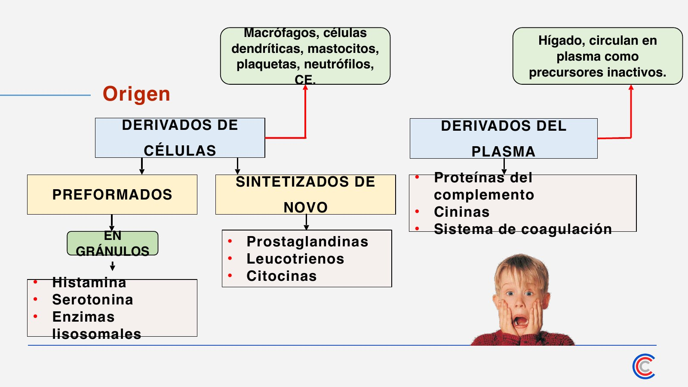
| Familia | Origem | Efeitos que caem |
|---|---|---|
| Histamina y serotonina | grânulos prontos: mastócitos, basófilos, plaquetas | segundos; H1: vasodilatação + permeabilidade; urticária, anafilaxia |
| Prostaglandinas (COX-1/2) | ácido araquidônico (fosfolipasa A2) | PGE2/PGD2: vasodilatação, permeabilidade, dor, febre; PGI2 antiagregante; TXA2 pró-agregante; AINEs bloqueiam |
| Leucotrienos (lipooxigenasa) | ácido araquidônico | LTB4 quimiotaxia; LTC4/D4/E4 broncoespasmo e permeabilidade (asma); AINEs não bloqueiam |
| Citocinas | macrófagos | TNF, IL-1: adesão, febre, leucocitose, fase aguda; IL-6; IL-8 quimiotaxia |
| Complemento | fígado (3 vias → C3) | C3a, C5a anafilatoxinas (C5a quimiotático) · C3b opsonina · C5b-9 ataque à membrana |
| Cininas | plasma: fator XII (Hageman) → calicreína | bradicinina: permeabilidade, vasodilatação, dor; degradada pela ECA |
| Óxido nítrico | endotélio, macrófagos | vasodilatador, microbicida; em excesso, choque |
Efectos (tabla del slide 52, a mais cobrada)
| Efecto | Mediadores (slide) | Signo |
|---|---|---|
| Vasodilatación | Histamina · Prostaglandinas · C3a y C5a (anafilotoxinas) · Bradicinina | Rubor, calor |
| Aumento de permeabilidad vascular | Histamina y serotonina · PG D2, E2 · Bradicinina | Edema |
| Quimiotaxia, reclutamiento y activación de leucocitos | TNF, IL-1 · Quimiocinas (y C5a, LTB4 del slide de quimiotaxia) | Leucocitosis |
| Fiebre | IL-1, TNF · Prostaglandinas · IL-6 | |
| Dolor | Prostaglandinas · Bradicinina | |
| Lesión tisular | Enzimas lisosómicas · ERO | |
| Complemento | Opsonina → C3b · MAC (complejo de ataque a membrana) → C5b-9 |
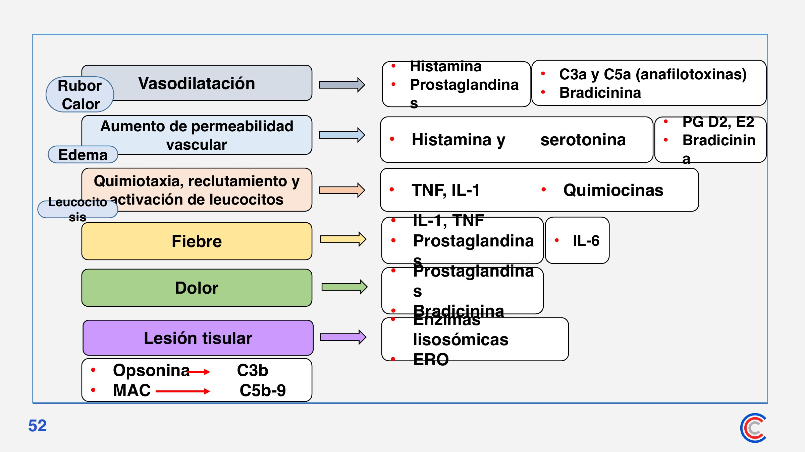
| Sinal / efeito | Mecanismo | Mediadores |
|---|---|---|
| Rubor + calor | vasodilatação | histamina, PG ("H e P"), C3a/C5a, bradicinina |
| Tumor | permeabilidade | histamina, serotonina, PGD2/E2, bradicinina, LTC4/D4/E4 |
| Dor | sensibilização nervosa | PG e bradicinina |
| Febre | PG no hipotálamo | IL-1, TNF, IL-6 |
| Leucocitose / quimiotaxia | recrutamento | TNF, IL-1, IL-8, C5a, LTB4 |
| Lesão tecidual | o que o neutrófilo solta | enzimas lisossomais, radicais livres |
Lo que dijo la Dra. en la clase de repaso · mediadores
«Tienen este listado, no es para decorar esto… Básicamente lo que se suele preguntar de los mediadores es el origen y la función que tiene.»
«Dos orígenes, derivados de células, derivados del plasma. Los que son derivados de células pueden ser preformados… almacenaditos… se degranulan… la histamina, la serotonina, las enzimas lisosomales; las que son sintetizadas de novo: las prostaglandinas, los leucotrienos, las citocinas.»
«Las que están en el plasma de forma inactiva… se producen la mayoría de ellas en el hígado… sistema del complemento, sistema de quininas, donde le encontramos a la bradicinina, y también… el sistema de coagulación. Aunque el sistema de coagulación para el proceso inflamatorio… no es que le vamos a dar mucha importancia.»
«Vasodilatación… el principal es la histamina, pero también las prostaglandinas y las anafilotoxinas y la bradicinina.»
«La serotonina no tiene un efecto vasodilatador, gente, es lo opuesto… La serotonina participa en el aumento de permeabilidad, no así en el proceso de vasodilatación.»
«Tenemos que diferenciar los leucotrienos… el B4 es quimiotáctico. C, D y E4 genera aumento de permeabilidad vascular… me voy a recordar… con Ciudad del Este y Foz, y el puente… leucotrieno CDE… hay un puente que sirve para que las células pasen de un lugar a otro.»
«En el reclutamiento de células… el factor de necrosis tumoral, la interleucina 1… las anafilotoxinas, lo que tienen de resaltados de amarillo. Son quimiotácticos propiamente… las quimiocinas, que es la interleucina 8… C5a y leucotrieno B4.»
| Efeito (como ela leu o slide 52) | Mediadores |
|---|---|
| Vasodilatación (rubor y calor) | Histamina (principal) · prostaglandinas · anafilotoxinas · bradicinina · não serotonina |
| Aumento de permeabilidad (edema) | Histamina y serotonina · bradicinina · leucotrienos C4, D4, E4 ("CDE") · prostaglandinas |
| Reclutamiento / quimiotaxia | TNF, IL-1, anafilotoxinas (amarelo) · quimiotácticos propriamente: interleucina 8, C5a, leucotrieno B4 |
| Fiebre | Citocinas (IL-1, TNF), prostaglandinas, interleucina 6 |
| Dolor | Prostaglandinas, bradicinina |
| Lesión tisular | Enzimas lisosómicas, especies reactivas de oxígeno (+ óxido nítrico se falar de fagocitose) |
| Complemento | Opsonina C3b · complejo de ataque de membrana (MAC) C5b-9 |
Ela sugeriu organizar por grupos se ficar mais fácil (ex.: aminas vasoactivas = histamina e serotonina, e as funções de cada uma), e disse que no livro isso são "4 a 5 páginas", ou seja, leitura curta se algo não ficar claro.
- "Marque a alternativa correta" com pares mediador–efeito caiu em todas as versões. Pares certos: C3b – opsonización, C5b-9 – lisis celular, TNF – fiebre, IL-6 – fiebre, LTB4 – quimiotaxia, prostaciclina – vasodilatación.
- Pares errados que ela usa: "LTB4 – aumento de permeabilidad" ou "LTB4 – vasodilatación" (é quimiotaxia), "C5b-9 – opsonización" (é lise), "prostaciclina – vasoconstrictor" ou "– aumento de permeabilidad" (é vasodilatadora), "IL-6 – quimiotáctico" ou "– dolor" (é febre), "leucotrieno C4 – vasodilatación" (LTC4/D4/E4 fazem vasoconstrição, broncoespasmo e aumento de permeabilidade).
- Bradicinina não é derivada de célula (a professora escreveu isso com três pontos de exclamação). "Mediadores derivados de célula que causan vasodilatación" → histamina y prostaglandinas.
- Derivados do plasma: complemento (C3a, C5a), cininas (bradicinina), coagulação.
- Anafilotoxinas = C3a y C5a (não C3b).
- Dor = prostaglandinas y bradicinina. Na apendicite, opções "C3b e IgG / IL-1 e TNF / histamina e serotonina / PG e bradicinina / leucotrienos e HPETE" → PG e bradicinina.
- Inibidor de COX-2 / aspirina / AINE → diminui prostaglandinas → reducción del dolor articular (e da febre, e da vasodilatação). Não reduz leucotrienos: "la inhibición de la ciclooxigenasa influirá negativamente en la formación de leucotrienos y prostaglandinas" é falso.
- Histamina = principal mediador de la fase transitoria inmediata, causa dilatação arteriolar e aumento da permeabilidade venular; principal mediador da reação alérgica aguda. Liberada por mastócitos.
- "Vénulas precapilares" → distractor. Não existe vênula antes do capilar. Permeabilidade e migração = vénulas poscapilares. («Eso va a ser un gran distractor si es que encuentran».)
- Marginación × migración: palavras parecidas, «el cerebro nos engaña». Marginación = ir ao margem dentro da luz (1º passo). Migración = atravessar o endotélio (4º passo).
- Migración × quimiotaxia: ambas são "desplazamiento a favor de un gradiente". Migración = a través del endotelio / espacios interendoteliales. Quimiotaxia = por los tejidos hacia el sitio de lesión.
- Serotonina → só aumento de permeabilidad. Se a opção disser "serotonina – vasodilatación", está errada («es lo opuesto»).
- LTB4 × LTC4/D4/E4: B4 = quimiotáctico. C4, D4, E4 = aumento de permeabilidad (a "ponte" Ciudad del Este–Foz: CDE deixa as células passarem). Trocar os dois é a pegadinha.
- Primer cambio vascular × cambios característicos: primeiro = vasoconstricción transitoria (segundos, não característica). Característicos = vasodilatación + aumento de permeabilidad.
- "Flujo aumentado" = mais volume, com velocidade reduzida (estasis). Não é fluxo mais rápido.
- Exudación ≠ edema: edema é o exceso de líquido extravasado.
- Tumor nos sinais cardinais = tumefacción / edema, não neoplasia.
- Inflamación serosa = inflamação cujo líquido tem características de trasudado (poucas células, poucas proteínas, sem micro-organismos). É a exceção à regra "inflamação = exsudado". Aparece também nas infecções virais.
- Purulenta = supurativa: mesma coisa, não caia em "são padrões diferentes".
- Úlcera é padrão de inflamação aguda, mas na histologia coexistem aguda e crônica.
- Contracción = retracción endotelial (usa-se como sinônimo, pelo Robbins).
- Escrever por extenso: "interleucina 8", "leucotrieno B4", "especies reactivas de oxígeno" (não só "ERO"). "C5a" pode ficar assim.
- Pergunta específica → resposta específica: "pasos en la luz vascular" são só marginación, rodamiento, adhesión; não liste os 6.
- Ela não vai pedir a lista dos sinais cardinais; vai pedir os sinais da vasodilatação (rubor y calor) ou do aumento de permeabilidade (tumor).
Cite dos características de la inflamación aguda. → 1. Cambios vasculares (vasodilatación y aumento de permeabilidad vascular → exudado/edema) · 2. Infiltrado de leucocitos polimorfonucleares (neutrófilos)
Cite dos características de la inflamación crónica. → Proliferación de vasos sanguíneos y depósito de tejido conjuntivo · leucocitos mononucleares (linfocitos y macrófagos)
¿Cuál es el primer cambio vascular en la inflamación aguda? → Vasoconstricción transitoria (dura segundos; no es característico)
Cite dos cambios vasculares característicos de la inflamación aguda. → Vasodilatación y aumento de la permeabilidad microvascular
Signos cardinales resultantes de la vasodilatación. → Rubor y calor · del aumento de permeabilidad → Tumor (edema)
Principal mediador de la vasodilatación en la fase inicial y célula que lo libera. → Histamina · mastocitos
Vasos afectados primero en la vasodilatación. → Arteriolas (luego apertura de nuevos lechos capilares)
Mecanismo más frecuente del aumento de permeabilidad vascular. → Contracción de las células endoteliales (aumento de los espacios interendoteliales)
Cite los mecanismos del aumento de permeabilidad vascular. → Contracción de células endoteliales, lesión endotelial, transcitosis
Sitio del aumento de permeabilidad y de la migración de leucocitos. → Vénulas poscapilares
Pasos del reclutamiento de leucocitos en la luz vascular. → Marginación, rodamiento, adhesión · a través de la pared → Transmigración (diapédesis) · en los tejidos → Quimiotaxia y fagocitosis
Moléculas de adhesión del rodamiento / adhesión / migración. → Selectinas / integrinas / inmunoglobulinas
Cite sustancias quimiotácticas endógenas. → Interleucina 8, C5a, leucotrieno B4 · exógenas → Productos bacterianos
Pasos de la fagocitosis. → Reconocimiento y fijación · atrapamiento (fagolisosoma) · destrucción y degradación
Mediadores de la destrucción en la fagocitosis. → Especies reactivas de oxígeno, óxido nítrico, enzimas lisosómicas
¿Por qué los neutrófilos llegan primero? → Son más numerosos en sangre, responden más rápido, se adhieren con mayor firmeza a las moléculas de adhesión
Excepciones: Pseudomonas / infecciones virales / hipersensibilidad / alergias. → Neutrófilos por varios días / linfocitos / mononucleares / eosinófilos
Diferencie trasudado y exudado (con mecanismo). → Trasudado: ultrafiltrado de plasma, pocas proteínas y células, baja densidad, claro; presión osmótica o hidrostática · Exudado: muchas proteínas y células, alta densidad, turbio; aumento de permeabilidad
Inflamación con líquido de bajo contenido celular, sin microorganismos (ampollas, infecciones virales). → Inflamación serosa
Ejemplo clásico de inflamación fibrinosa. → Pericarditis en pan con mantequilla
Bacteria productora de pus clásica / ejemplo de inflamación purulenta. → Staphylococcus aureus · apendicitis aguda
Hallazgo radiológico del absceso. → Nivel hidroaéreo
Patrón en que coexisten inflamación aguda y crónica. → Úlcera
Tres evoluciones de la inflamación aguda. → Resolución completa · cicatrización/fibrosis · progresión a inflamación crónica
Mediadores preformados / sintetizados de novo / plasmáticos. → Histamina, serotonina, enzimas lisosomales / prostaglandinas, leucotrienos, citocinas / complemento, cininas (bradicinina), coagulación
Mediador que aumenta la permeabilidad pero NO causa vasodilatación. → Serotonina
Leucotrienos que aumentan la permeabilidad / leucotrieno quimiotáctico. → C4, D4, E4 / B4
Fonte: transcrição do repaso P2 de inflamación aguda (Dra. Chamorro). Falas corrigidas só em erros evidentes da transcrição automática (ex.: "vérulas" → vénulas, "ninfangitis" → linfangitis).
Cite los signos cardinales de la inflamación resultantes de la vasodilatación. → Rubor y calor
Cite dos cambios vasculares característicos de la inflamación aguda. → Vasodilatación y aumento de permeabilidad
2 mediadores químicos que causan aumento de la permeabilidad vascular. → Histamina, bradicinina (serotonina, PG D2/E2)
La ______ es el principal mediador de la fase transitoria inmediata, causante de dilatación arteriolar y aumento de permeabilidad venular. → Histamina
Cite 2 fagocitos principales en la reacción inflamatoria aguda. → Neutrófilos y macrófagos
En la inflamación aguda, la migración de leucocitos ocurre principalmente a través del endotelio de las ______ → Vénulas poscapilares
Molécula de adhesión responsable de la adhesión firme. → Integrina
Moléculas de adhesión expresadas en CE, para el proceso en que leucocitos de forma individual y en filas se colocan sobre el endotelio de forma transitoria. → E-selectina
Fases del trayecto leucocitario en la luz vascular. → Marginación, rodamiento, adhesión · en el tejido → Transmigración y quimiotaxia
Se denomina ______ al movimiento de los leucocitos por los tejidos al sitio de lesión por productos bacterianos. → Quimiotaxia
Dos sustancias quimiotácticas endógenas. → IL-8, C5a, LTB4
2 mediadores de dolor / de fiebre. → Dolor: PG y bradicinina · Fiebre: IL-1, TNF (IL-6, PG)
Mediadores denominados anafilotoxinas. → C3a y C5a
Las bacterias son fagocitadas por neutrófilos o sufren lisis, efectos facilitados por componentes del plasma. → Complemento (C3b opsoniza; C5b-9 lisa)
Mujer 24 años toca olla con agua hirviendo; a las 2 h eritema y pequeñas ampollas. → Inflamación serosa (líquido con bajo contenido de células)
Pericarditis "en pan con mantequilla" es ejemplo típico de inflamación ______ → Fibrinosa
Neumonía por S. pneumoniae; la eliminación se logra por la generación de ¿qué sustancia por la principal célula inflamatoria? → Peróxido de hidrógeno
Lesión de 1,5 cm en antro gástrico con pérdida de la superficie epitelial. → Úlcera
Características del líquido que indican exudado. → Alto contenido de proteínas
Proceso que se presenta más tempranamente en la inflamación aguda (adhesión, permeabilidad, edema, destrucción). → Incremento de la permeabilidad vascular (vem antes da adesão e do edema formado)
Proceso más tardío (histamina, vasodilatación, migración de monocitos, extravasación). → Migración de monocitos (24–48 h)
Fontes: P2 turmas C, D, I; segunda prueba de regularización 26/11/2024; segunda recuperatoria; final complementario 21/02/2024.
1.7 Casos resueltos · raciocínio passo a passo
Menino de 9 anos com dor na fossa ilíaca direita há 18 h, febre e neutrofilia. Apêndice edemaciado e avermelhado, com exsudato na serosa.
1) Tipo e padrão?
Aguda, purulenta.
2) Por que vermelho e quente?
Vasodilatação (histamina, PG).
3) Por que edemaciado?
↑ permeabilidad das vénulas poscapilares: exudado.
4) Que célula e por quê?
Neutrófilo: mais numeroso, mais rápido, adesão mais firme.
5) Febre e leucocitose?
IL-1, TNF, IL-6 (PGE2 no hipotálamo).
Lactente com infecções bacterianas de repetição, queda tardia do coto umbilical, neutrofilia, sem pus nas lesões.
1) Que etapa falha?
Adhesión firme: LAD tipo 1, sem β2-integrinas.
2) Por que muitos no sangue e poucos no tecido?
Rolam mas não param.
3) E se faltasse sialil-Lewis X?
LAD tipo 2: nem rolam.
A, com insuficiência cardíaca: derrame claro, densidade 1,010. B, com pneumonia: derrame turvo, densidade 1,025, muitos neutrófilos.
1) Classifique.
A = transudado; B = exudado purulento.
2) O que mudou em A?
↑ pressão hidrostática.
3) Que proteína só sai em B?
Fibrinógeno.
- ¿Dónde ocurre principalmente el aumento de permeabilidad por contracción endotelial?
- A Arteriolas
- B Vénulas poscapilares
- C Capilares linfáticos
- D Vénulas precapilares
- Molécula responsable del rodamiento de los leucocitos:
- A Selectinas
- B Integrinas
- C PECAM-1
- D Quimiocinas
- Mediadores responsables del dolor:
- A IL-1 y TNF
- B Histamina y serotonina
- C C3b e IgG
- D Prostaglandinas y bradicinina
- Quemadura con ampollas llenas de líquido claro: patrón de inflamación:
- A Fibrinosa
- B Purulenta
- C Serosa
- D Ulcerosa
- Hombre de 30 años se clava una astilla. A las 2 horas la zona está roja y caliente. El mecanismo responsable del rubor y el calor es:
- A Aumento de la permeabilidad de vénulas poscapilares
- B Vasodilatación arteriolar por histamina
- C Quimiotaxia de neutrófilos por C5a
- D Contracción de miofibroblastos
- ¿Cuál de las siguientes secuencias del trayecto leucocitario es correcta?
- A Marginación, rodamiento, adhesión, transmigración, quimiotaxia
- B Adhesión, marginación, rodamiento, quimiotaxia
- C Rodamiento, transmigración, adhesión, fagocitosis
- D Quimiotaxia, marginación, adhesión, rodamiento
- Un niño con infecciones bacterianas recurrentes presenta leucocitosis marcada pero pocos neutrófilos en los tejidos. Se demuestra un defecto en la adhesión firme de los leucocitos al endotelio. La molécula deficiente es:
- A E-selectina
- B PECAM-1
- C IL-8
- D β2-integrina
- Teniendo en cuenta los siguientes mediadores y sus efectos, marque la alternativa correcta:
- A Leucotrieno B4 – vasodilatación
- B IL-6 – dolor
- C C3b – opsonización
- D Prostaciclina – aumento de permeabilidad
- Teniendo en cuenta los siguientes mediadores y sus efectos, marque la alternativa correcta:
- A C5b-9 – opsonización
- B TNF – fiebre
- C Leucotrieno C4 – vasodilatación
- D Prostaciclina – vasoconstricción
- Paciente con fiebre reumática presenta roce pericárdico. En la autopsia el pericardio muestra superficies rugosas con filamentos amarillentos. En la MO se espera:
- A Red eosinófila de fibrina
- B Líquido con bajo contenido de células
- C Masa de neutrófilos necróticos con nivel hidroaéreo
- D Pérdida de epitelio superficial
- Paciente con insuficiencia cardíaca y derrame pleural bilateral. El líquido es claro, con densidad baja y escasas células. Corresponde a:
- A Exudado por aumento de permeabilidad
- B Exudado purulento
- C Exudado fibrinoso
- D Trasudado por aumento de presión hidrostática
- Un paciente con artritis toma un AINE (inhibidor de COX). ¿Qué mediador disminuye y qué efecto se espera?
- A Leucotrienos; menor quimiotaxia
- B Histamina; menor edema
- C Prostaglandinas; menor dolor y fiebre
- D Bradicinina; menor lisis celular
- En una infección viral aguda, las primeras células inflamatorias en llegar pueden ser:
- A Neutrófilos
- B Linfocitos
- C Eosinófilos
- D Células plasmáticas
- Una lesión inflamatoria aguda limitada, de corta duración, con escasa destrucción tisular en un órgano con células capaces de regenerarse evolucionará a:
- A Resolución completa
- B Fibrosis
- C Inflamación crónica
- D Absceso
- Verdadero o falso: El fenómeno de marginación es un proceso de redistribución leucocitaria por el cual los leucocitos se sitúan en la periferia del flujo sanguíneo.
- A Verdadero
- B Falso
- Verdadero o falso: La inhibición selectiva de la vía de la ciclooxigenasa influirá negativamente en la formación de leucotrienos y prostaglandinas.
- A Verdadero
- B Falso
- Verdadero o falso: La contracción de las células endoteliales es el mecanismo más frecuente de aumento de permeabilidad y afecta capilares y arteriolas.
- A Verdadero
- B Falso
- Verdadero o falso: La bradicinina es un mediador preformado derivado de los mastocitos.
- A Verdadero
- B Falso
- 1 · B Distractor dela: "vénulas precapilares" não existe nesse contexto.
- 2 · A Selectinas = rodamiento; integrinas = adhesión firme; PECAM-1 = transmigración.
- 3 · D IL-1/TNF = fiebre; histamina = vasodilatación/permeabilidad; C3b = opsonización.
- 4 · C Serosa = exsudato pobre em células e proteínas.
- 5 · B Rubor e calor = vasodilatação. A permeabilidade gera o tumor (edema).
- 6 · A Resposta: Marginación, rodamiento, adhesión, transmigración, quimiotaxia.
- 7 · D Adesão firme = integrinas. Selectina é rodamento; PECAM-1 (inmunoglobulina) é transmigração.
- 8 · C LTB4 = quimiotaxia; IL-6 = febre; prostaciclina = vasodilatação. (Versão idêntica caiu na turma D.)
- 9 · B C5b-9 = lise (MAC); LTC4 = vasoconstrição/broncoespasmo; prostaciclina = vasodilatação. (Caiu na turma C.)
- 10 · A Pericarditis "pan con mantequilla" = inflamação fibrinosa; se não for removida, organiza em cicatriz.
- 11 · D Transudado = desequilíbrio hidrostático/osmótico, sem inflamação.
- 12 · C COX produz prostaglandinas. Leucotrienos vêm da lipoxigenase e não caem com AINE.
- 13 · B Exceção do slide.
- 14 · A Resposta: Resolución completa.
- 15 · A Numa prova antiga o enunciado dizia "migración" no lugar de "marginación", e aí era F. Leia a palavra.
- 16 · B Só prostaglandinas (e tromboxano). Leucotrienos vêm da lipoxigenase. Caiu assim numa recuperatória.
- 17 · B É o mais frequente, mas afeta vénulas poscapilares; NO afecta capilares ni arteriolas.
- 18 · B Bradicinina é derivada do plasma (sistema de cininas). Preformados celulares: histamina, serotonina, enzimas lisossomais.
Neoplasias · generalidades
O tumor do começo ao fim: o que é, como se chama, como se vê, como avança e como se estadia.
- Neoplasia: masa anormal, crecimiento excesivo, descoordinado y autónomo, por mutaciones que afectan a una sola célula y a su progenie clónica.
- 2 componentes: parénquima (clasifica y define el comportamiento) + estroma reactivo. Mucho colágeno = DESMOPLASIA (mama, pétreo, escirro).
- Benigno -OMA · maligno mesenquimático SARCOMA · maligno epitelial CARCINOMA · sangre: leucemias y linfomas.
- 3 características: diferenciación y anaplasia · invasión local · metástasis. Anaplasia = pleomorfismo + núcleo anómalo + mitosis atípicas + pérdida de polaridad.
- Precursoras: metaplasia → displasia → carcinoma in situ (membrana basal intacta) → invasor.
- Vías: cavidades · linfática (carcinomas) · hematógena (sarcomas) → hígado y pulmones. Gradación = histológica · estadificación = clínica, TNM.
2.1 Definición y componentes
Uma célula acumula mutações e passa a se dividir sem obedecer aos sinais do tecido: cresce demais, sem coordenação e sem depender do estímulo que a iniciou (por isso "autónomo"). Toda a massa descende dessa única célula: é um clone.
Parénquima · "quem é" o tumor
- as células neoplásicas
- dá o nome e o comportamento
Estroma · "a casa" do tumor
- conjuntivo, vasos, células imunes
- define velocidade e propagação
- pouco = mole e carnoso · muito colágeno = desmoplasia, duro (escirro)
- A neoplasia nasce de uma só célula (monoclonal). Se a alternativa diz "varias células" ou "policlonal", está errada. Até o tumor mixto vem de um só clone.
- Desmoplasia é colágeno abundante no estroma, não no parênquima. Já caiu como "Acúmulo abundante de colágeno en neoplasia" → Desmoplasia.
- Quem classifica o tumor e define seu comportamento é o parénquima; o estroma define velocidade e propagação (dá o suporte vascular).
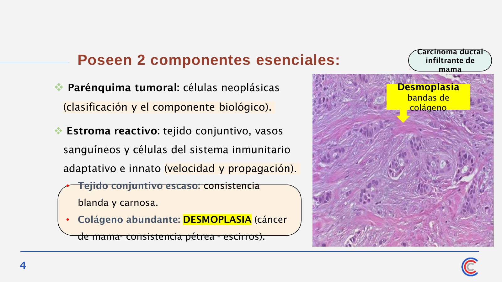
2.2 Nomenclatura
Organograma da nomenclatura
Mesenquimática → "OMA"
- Fibroma · Condroma · Osteoma
- Leiomioma (músculo liso)
- Rabdomioma (músculo esquelético)
- Lipoma
Epitelial → por célula, patrón o arquitectura
- Adenoma (tejido glandular)
- Papiloma (proyecciones digitales)
- Cistoadenoma (masas quísticas, ovario)
- Cistoadenoma papilar
- Pólipo · pólipo adenomatoso
Mesenquimática sólida → "SARCOMA"
- Fibrosarcoma · Condrosarcoma · Osteosarcoma
- Leiomiosarcoma
- Rabdomiosarcoma · Liposarcoma
Epitelial → "CARCINOMA"
- Carcinoma epidermoide (escamoso)
- Adenocarcinoma (patrón glandular)
- Origen desconocido: tumor maligno indiferenciado
Siempre malignas
- LEUCEMIAS
- LINFOMAS
Más de un tipo celular
- Tumor mixto: 1 clon, 1 capa germinal (adenoma pleomorfo)
- Teratoma: >1 capa germinal (3), células totipotenciales
Benignos · tejido del lugar o heterotópico
- Hamartoma: células propias del lugar, desorganizadas
- Coristoma: tejido normal en lugar anormal
"-oma" pero MALIGNOS
- Linfoma · Melanoma · Mesotelioma · Seminoma
- Pergunte a origem. Epitélio (revestimento, glândula) ou mesênquima (conjuntivo, músculo, osso, gordura, cartilagem)? Ou sangue?
- Pergunte o comportamento. Benigno ou maligno?
- Junte as duas respostas. Benigno = tecido + "oma" (fibroma, leiomioma) ou nome por padrão (adenoma, papiloma, cistoadenoma, pólipo). Maligno mesenquimático = tecido + "sarcoma". Maligno epitelial = carcinoma (escamoso/epidermoide se imita pele; adenocarcinoma se forma glândulas).
| Tecido | Benigno | Maligno |
|---|---|---|
| Fibroso | Fibroma | Fibrosarcoma |
| Cartílago | Condroma | Condrosarcoma |
| Músculo liso | Leiomioma | Leiomiosarcoma |
| Músculo esquelético | Rabdomioma | Rabdomiosarcoma |
| Hueso | Osteoma | Osteosarcoma |
| Grasa | Lipoma | Liposarcoma |
| Epitelio glandular | Adenoma | Adenocarcinoma |
| Epitelio escamoso | Papiloma | Carcinoma epidermoide |
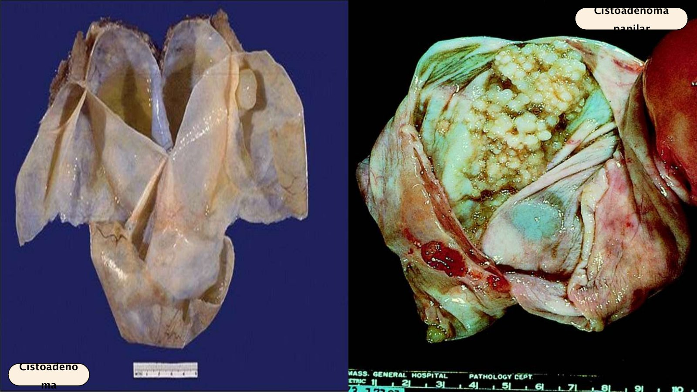
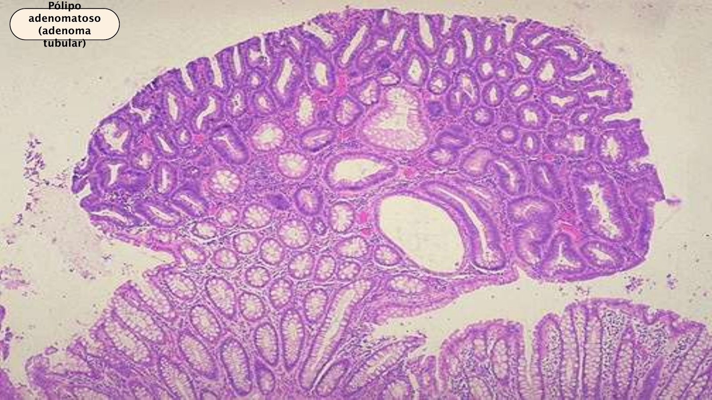
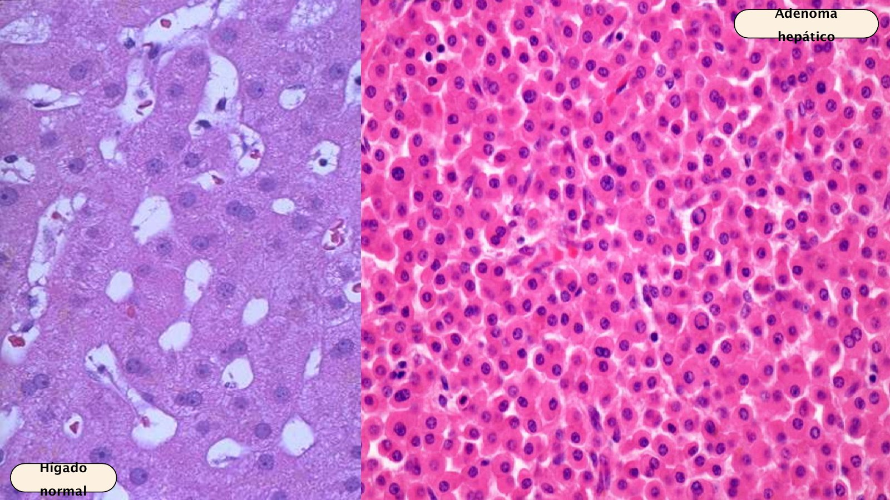
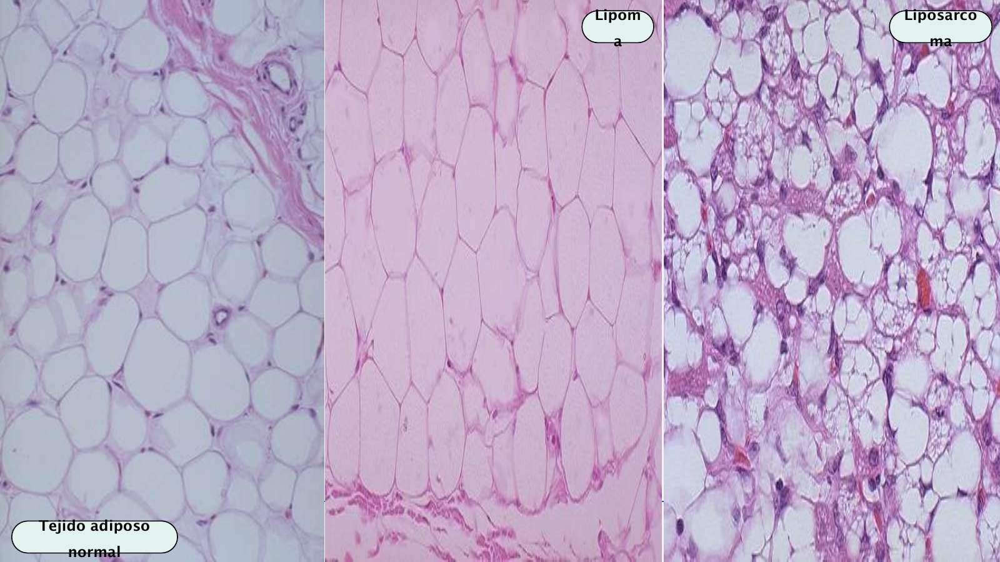
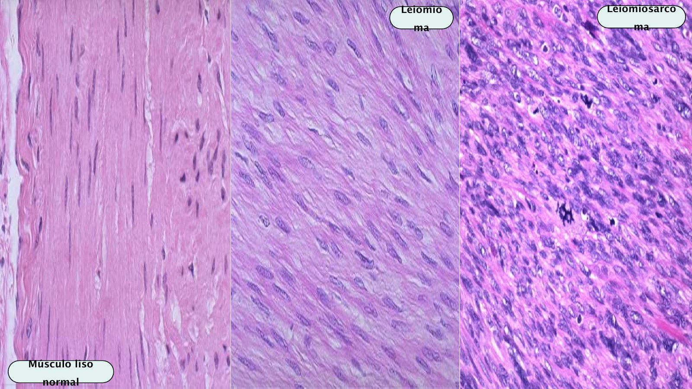
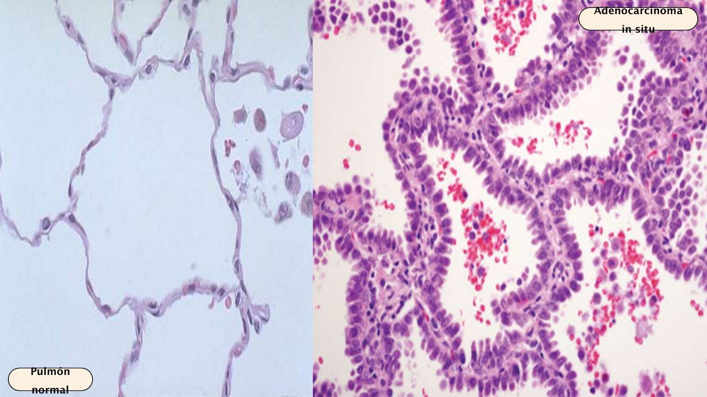
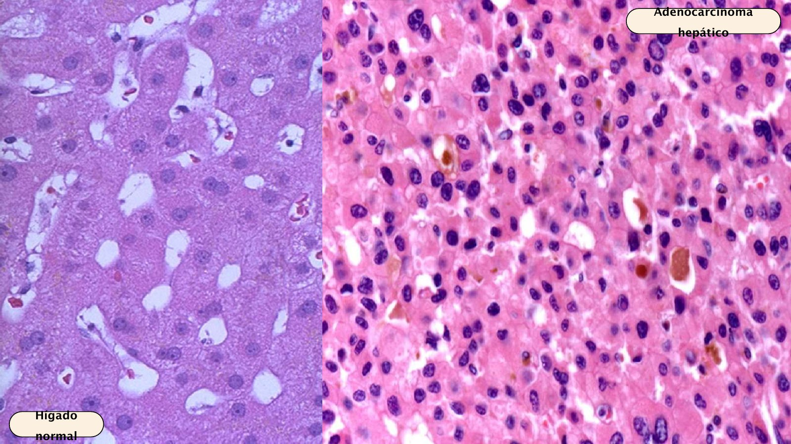
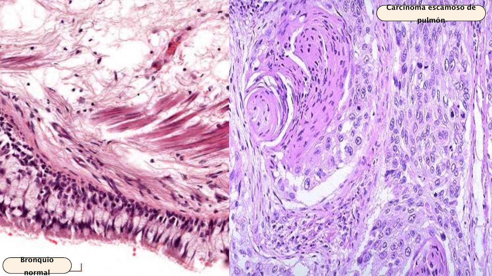
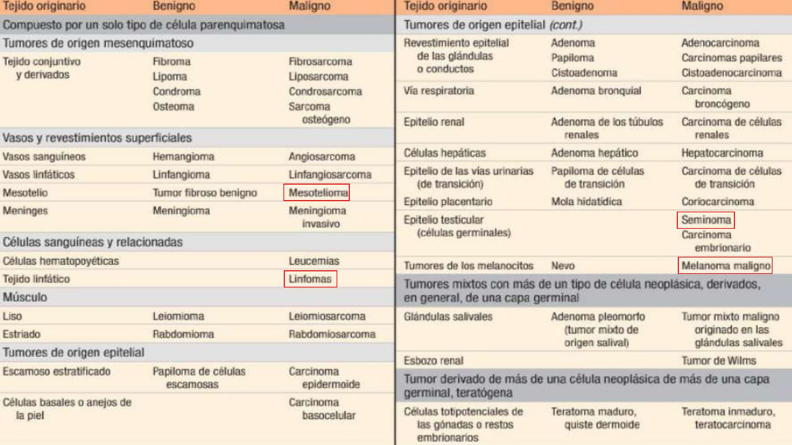
- "-oma" nem sempre é benigno: linfoma, melanoma, mesotelioma e seminoma são malignos (a Dra. marcou esses quatro em vermelho na tabela).
- Leiomiosarcoma = maligno mesenquimático, mesmo bem diferenciado. "Bien diferenciado" não o torna benigno nem encapsulado.
- Carcinoma pode vir das 3 capas germinais (o túbulo renal é mesoderma e dá carcinoma). Quem decide é ser epitélio, não a camada.
- Pólipo é descrição macroscópica (projeção na mucosa), não diagnóstico de benignidade: pólipo con tejido glandular = pólipo adenomatoso.
2.3 Tumores mixtos, teratoma, hamartoma y coristoma
Tumor mixto
Um clone que sabe fazer dois tipos de célula (epitelial e mioepitelial). Uma capa germinal. Ex.: adenoma pleomorfo da parótida.
Teratoma
Célula totipotente (gônada) que faz tecidos das 3 capas: pele, pelo, dente, cartilagem, tireoide. Ex.: quiste dermoide.
Hamartoma
Tecido do próprio lugar, mas desorganizado ("bagunça local"). Ex.: hamartoma pulmonar.
Coristoma
Tecido normal no lugar errado ("visitante"). Ex.: pâncreas na submucosa gástrica.
| Lesión | Capas germinales | Clave para a prova | Exemplo do slide |
|---|---|---|---|
| Tumor mixto | 1 (um só clone) | epitelial + mioepitelial em estroma mixoide | Adenoma pleomorfo de glándula salival |
| Teratoma | > 1 (3) | células germinales totipotenciales; gônadas e linha média | Quiste dermoide (ovário) · struma ovarii |
| Hamartoma | — (tecido do próprio lugar) | células propias del lugar, desorganizadas | Hamartoma pulmonar |
| Coristoma | — (tecido normal fora do lugar) | resto heterotópico: tecido normal em local anormal | Páncreas na submucosa gástrica |
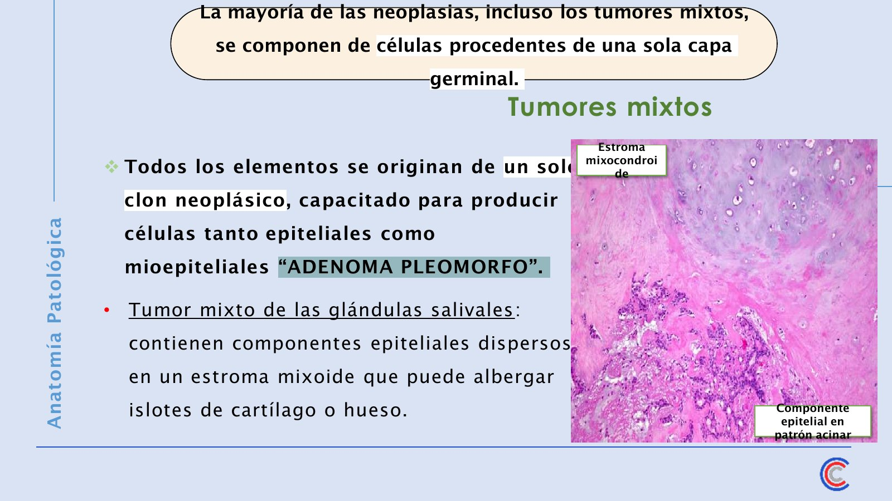
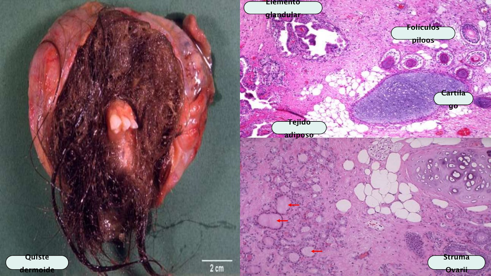
Parea las siguientes nomenclaturas con su definición correspondiente. Obs: solo 2 son correctas, las demás quedarán en blanco (doble marcación anula el ítem). a) Quiste dermoide · b) Hamartoma
- (b) Masas desorganizadas benignas de células propias del lugar afectado → Hamartoma.
- (a) Teratoma quístico que se diferencia sobre todo de las líneas ectodérmicas → Quiste dermoide.
- ( ) Presencia de tejido de aspecto normal en localización anormal → é coristoma: fica em branco.
- ( ) Forma especializada de teratoma que contiene cartílago, tejido adiposo, glándulas intestinales y numerosos folículos tiroideos → é struma ovarii: fica em branco.
- ( ) Proyección macroscópica visible sobre la superficie mucosa → é pólipo: fica em branco.
Fonte: foto da prova original (pág. 2 das provas antigas). Os distratores são definições corretas de outras lesões: marque só as 2 que pedem.
2.4 Características: diferenciación y anaplasia
Organograma benigno × maligno
Benignos
- Bien diferenciados
- Mitosis infrecuentes y de forma normal
Malignos
- Diferenciación variada (bien → indiferenciados)
- Anaplasia = rasgo distintivo de malignidad
Benignos
- Masas expansivas y cohesionadas
- Cápsula de tejido fibroso comprimido
- Excepto: hemangioma
Malignos
- Infiltración, invasión, destrucción
- Seudocápsula · "patas de un cangrejo"
Benignos
- No metastatizan
Malignos
- Todos pueden metastatizar
- Excepción: gliomas y carcinomas basocelulares (invaden pero casi nunca metastatizan)
A célula maligna "esquece" o que era: volta a um estado mais primitivo. Tudo o que se vê na lâmina sai disso:
Função: quanto mais diferenciada, mais a célula faz o que o tecido fazia (queratina, bile, hormônio próprio). A anaplásica perde isso e às vezes ganha funções novas (ACTH num tumor de pulmão): síndrome paraneoplásico.
| Rasgo | Benigno | Maligno |
|---|---|---|
| Diferenciación | bien diferenciado, parece o tecido de origem | variada; os indiferenciados têm anaplasia |
| Mitosis | infrequentes e normais | frequentes, atípicas y grotescas (tri-, tetra-, multipolares) |
| Núcleo | normal (N:C 1:4 a 1:6) | grande, hipercromático, N:C 1:1, nucléolos grandes |
| Crecimiento | lento, expansivo | rápido, infiltrativo |
| Límites | cápsula fibrosa: identifica, palpa, desloca, enuclea | mal delimitado; seudocápsula; patas de cangrejo |
| Metástasis | nunca | sim (exceto gliomas e basocelulares, quase nunca) |
| Função | conserva (hormônios, queratina) | perde; às vezes funções novas (síndromes paraneoplásicos) |
- "La presencia de mitosis indica malignidad" → FALSO. Tecidos normais em renovação (medula, mucosa intestinal) e hiperplasias também têm mitoses. O marcador de malignidade é a mitosis atípica (fuso tripolar, tetrapolar, multipolar).
- Relação núcleo:citoplasma: 1:1 no tumor × 1:4 a 1:6 no normal. Ela troca os números.
- Diferenciación é sobre función y forma, comparando com o parénquima sano (não com o estroma).
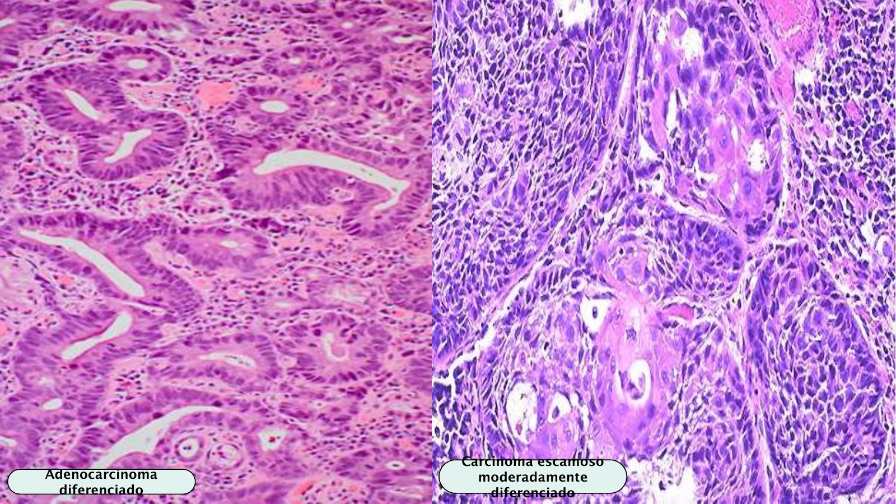
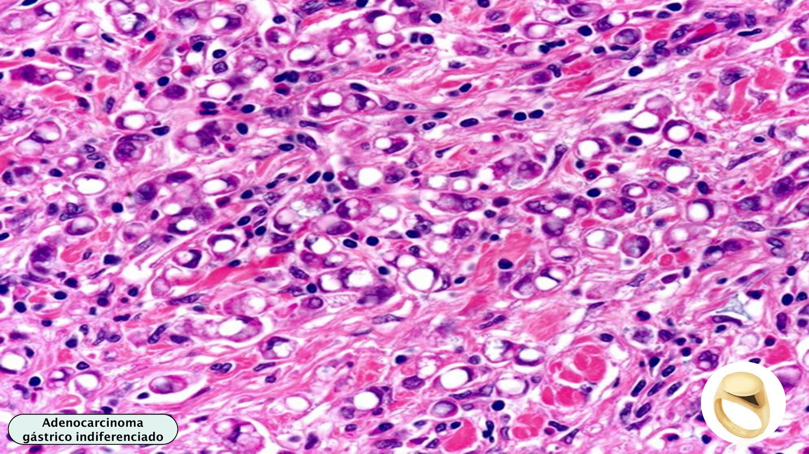
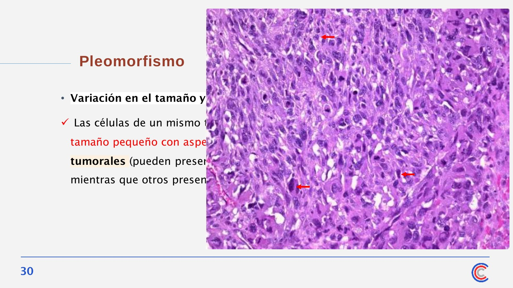
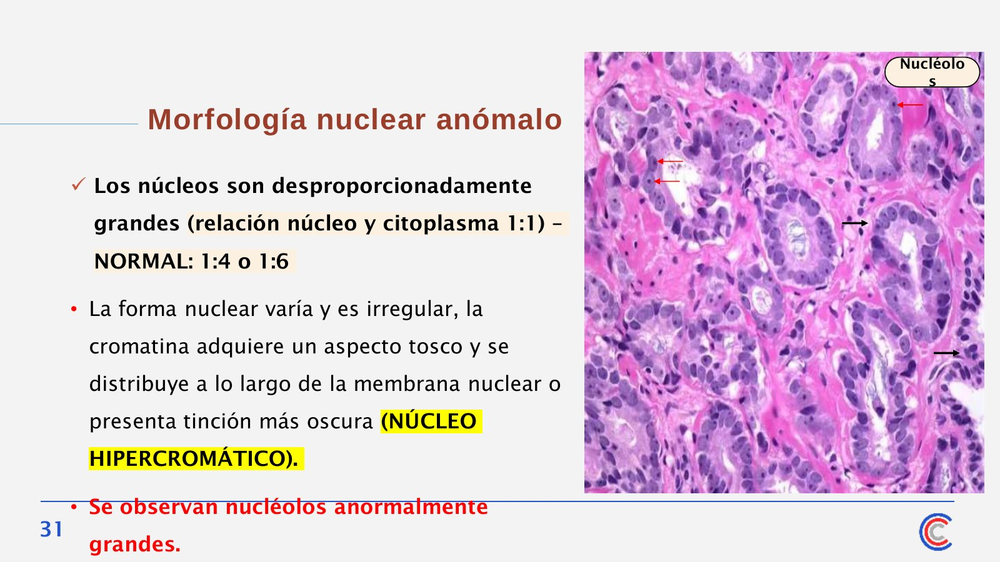
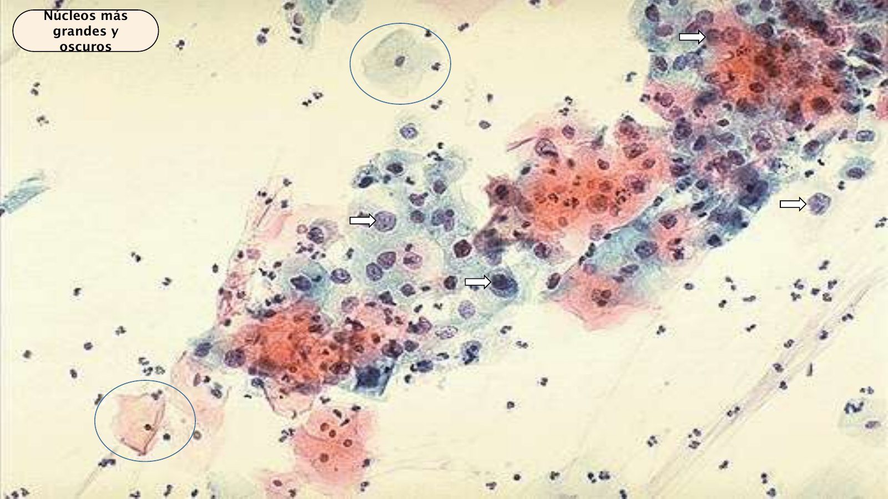
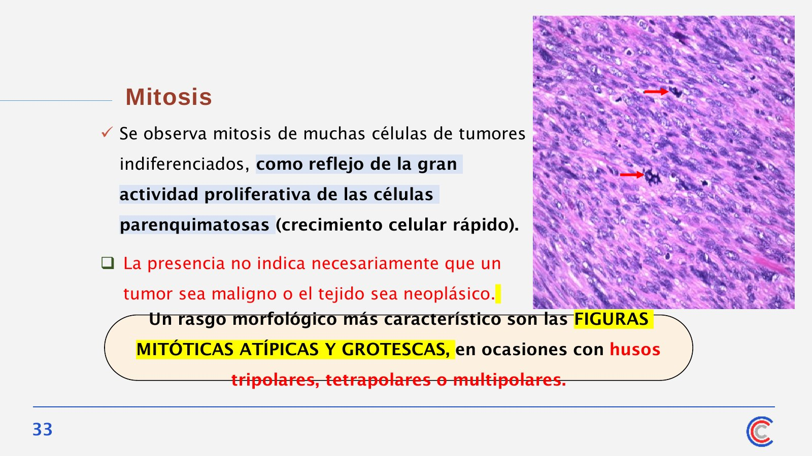
2.5 Función de la célula tumoral y síndromes paraneoplásicos
Síndromes paraneoplásicos · el cuadro del slide completado
O slide 37 traz só a coluna dos síndromes e as etiquetas Inmunitario e Desconocido. As colunas do tumor e do mecanismo vêm da mesma tabela do Robbins (cap. 7).
| Síndrome clínico (slide) | Tumor más asociado (Robbins) | Mecanismo |
|---|---|---|
| Síndrome de Cushing | carcinoma pulmonar de células pequeñas | ACTH o sustancia similar |
| SIADH (secreción inadecuada de ADH) | carcinoma pulmonar de células pequeñas | ADH o péptidos natriuréticos |
| Hipercalcemia | carcinoma epidermoide de pulmón, mama, renal | PTHrP, TGF-α, TNF, IL-1 |
| Hipoglucemia | fibrosarcoma y otros sarcomas, hepatocarcinoma | insulina o sustancia similar (IGF-II) |
| Policitemia | carcinoma renal, hemangioma cerebeloso, hepatocarcinoma | eritropoyetina |
| Miastenia | carcinoma broncógeno, timoma | Inmunitario |
| Trastornos del SNC y periférico | carcinoma de mama | Inmunitario |
| Acantosis nigricans | carcinoma gástrico, de pulmón, uterino | Inmunitario; secreción de EGF |
| Dermatomiositis | carcinoma broncógeno, de mama | Inmunitario |
| Osteoartropatía hipertrófica y acropaquia digital | carcinoma broncógeno | Desconocido |
| Trombosis venosa (fenómeno de Trousseau) | carcinoma pancreático, broncógeno | productos tumorales (mucinas) que activan la coagulación |
| Coagulación intravascular diseminada | leucemia promielocítica aguda, próstata | productos tumorales que activan la coagulación |
| Endocarditis trombótica abacteriana | cánceres avanzados | hipercoagulabilidad |
| Aplasia eritrocítica | timoma | Desconocido |
| Síndrome nefrótico | varios cánceres | antígenos tumorales, inmunocomplejos |
- Hormônio próprio do órgão (insulina num tumor de ilhota, queratina num escamoso) = sinal de boa diferenciação.
- Hormônio estranho ao órgão (ACTH num carcinoma de pulmão) = função nova e imprevista de célula anaplásica → síndrome paraneoplásico.
- Hipercalcemia paraneoplásica clássica = carcinoma epidermoide de pulmão (PTHrP). Cushing e SIADH = células pequeñas.
2.6 Lesiones precursoras: metaplasia, displasia, carcinoma in situ
Por isso o Papanicolaou (citologia exfoliativa) rastreia o colo: pega a lesão nos degraus de cima.
- O que define carcinoma in situ é a membrana basal intacta. "Crecimiento desordenado en todo el espesor epitelial" descreve a displasia intensa, mas o critério pedido é a membrana basal (foi exatamente essa a pegadinha da prova).
- Carcinoma in situ não metastatiza: sem invadir a membrana basal não alcança vasos. "Baja incidencia de metástasis" está errado: é nenhuma.
- Displasia ≠ câncer e nem sempre evolui; leve e moderada podem regredir. Já a displasia de todo o espesor é o in situ.
- Metaplasia é adaptação (P1); o risco vem da displasia que pode surgir sobre ela (Barrett).
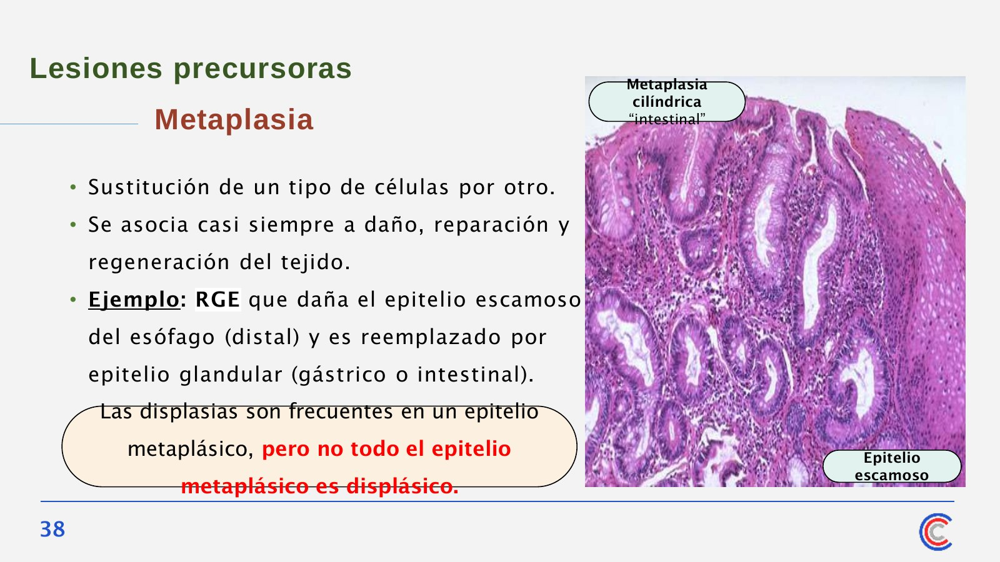
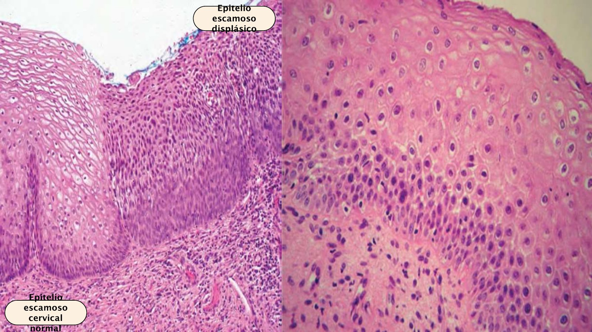
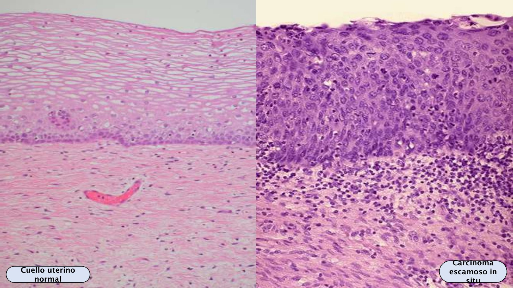
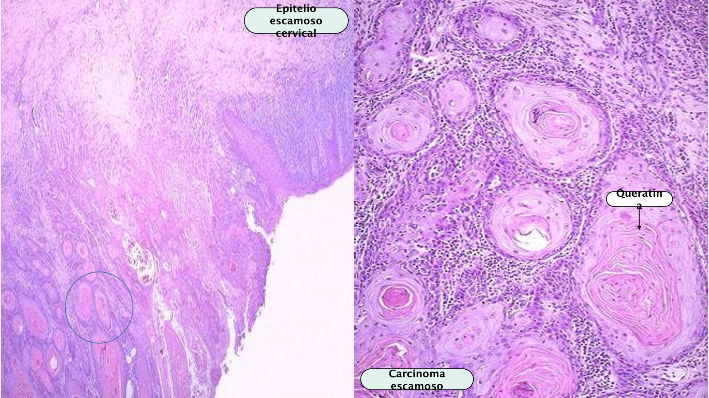
17. Se realiza una biopsia cervical, cuyo estudio histológico muestra un carcinoma in situ con áreas de epitelio escamoso con formación de perlas córneas. El concepto de carcinoma in situ corresponde a una lesión que se caracteriza por: a) Ausencia de atipia marcada · b) Baja incidencia de metástasis · c) Membrana basal intacta · d) Crecimiento desordenado en todo el espesor epitelial → c) Membrana basal intacta
12. Mujer de 59 años con dolor retroesternal y ardor después de las comidas hace 4 años; biopsia de la mucosa esofágica inferior con epitelio cilíndrico con células caliciformes. ¿Qué alteración de la mucosa está más probablemente representada? → Metaplasia intestinal (esófago de Barrett)
Transcrição de alunos: "Lesión tumoral en el cuello uterino. Examen que debe hacerse antes de que se vuelva un tumor" → Citología exfoliativa (Papanicolaou)
2.7 Invasión local
Benigno = balão que empurra
Cresce devagar e empurra o tecido vizinho, que se comprime numa cápsula fibrosa. Resultado: bem delimitado, móvel, sai inteiro por enucleação. Exceção: hemangioma (vasos entrelaçados, sem cápsula).
Maligno = caranguejo
Infiltra entre as estruturas: limites mal definidos, fixo, exige margem cirúrgica. Mesmo quando parece ter cápsula (seudocápsula), o microscópio mostra cordões atravessando a margem: as "patas de cangrejo" (daí o nome "câncer").
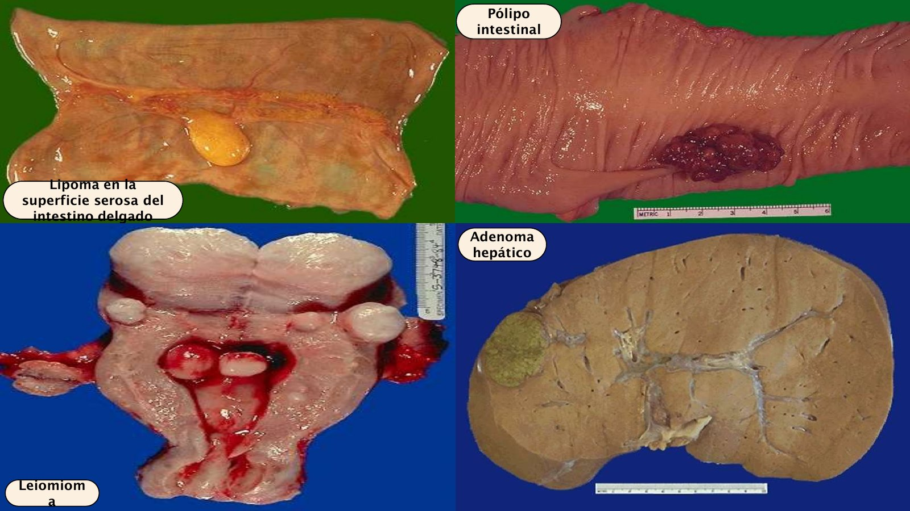
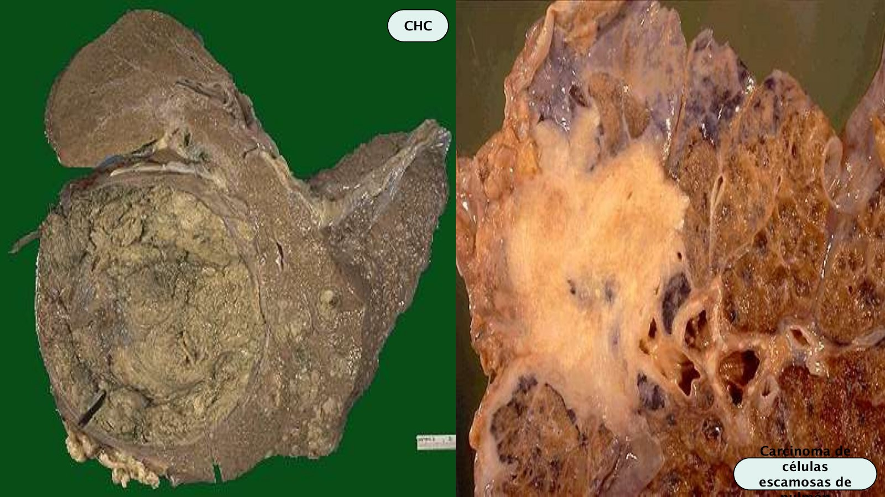
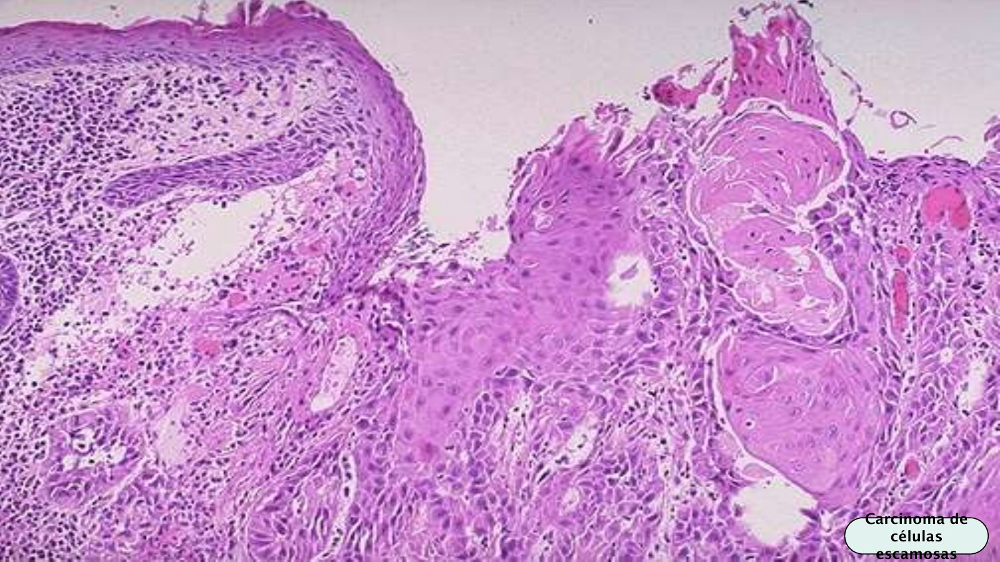
2.8 Metástasis y vías de diseminación
Organograma das vias de disseminação
Dónde
- Cavidad peritoneal (la más frecuente)
- Pleural, pericárdica, subaracnoidea
Ejemplo
- Carcinoma de ovario
- Mucosecretores apendiculares u ováricos → SEUDOMIXOMA PERITONEAL
Característica
- Vía más habitual de diseminación inicial de los carcinomas
- También sarcomas
Clave
- Ganglio linfático centinela: primer ganglio que recibe la linfa del tumor
Característica
- Característica de los sarcomas (también carcinomas)
- Venas > arterias (pared arterial más gruesa)
Destino
- HÍGADO (drenaje portal)
- PULMONES (sangre de las cavas)
A célula tumoral entra mais fácil na veia (parede fina) do que na artéria. Depois segue o sangue venoso:
- Carcinoma → linfática (inicial); sarcoma → hematógena. O slide põe a outra entre parênteses: as duas vias valem para ambos, mas a "característica" é essa.
- Glioma e carcinoma basocelular: invadem cedo, mas quase nunca metastatizam. Não são benignos.
- Seudomixoma peritoneal = siembra de cavidades por tumor mucosecretor de apêndice ou ovário, não metástase hematógena.
- Veias são invadidas mais que artérias (parede mais fina). Por isso os destinos são fígado (porta) e pulmões (cavas).
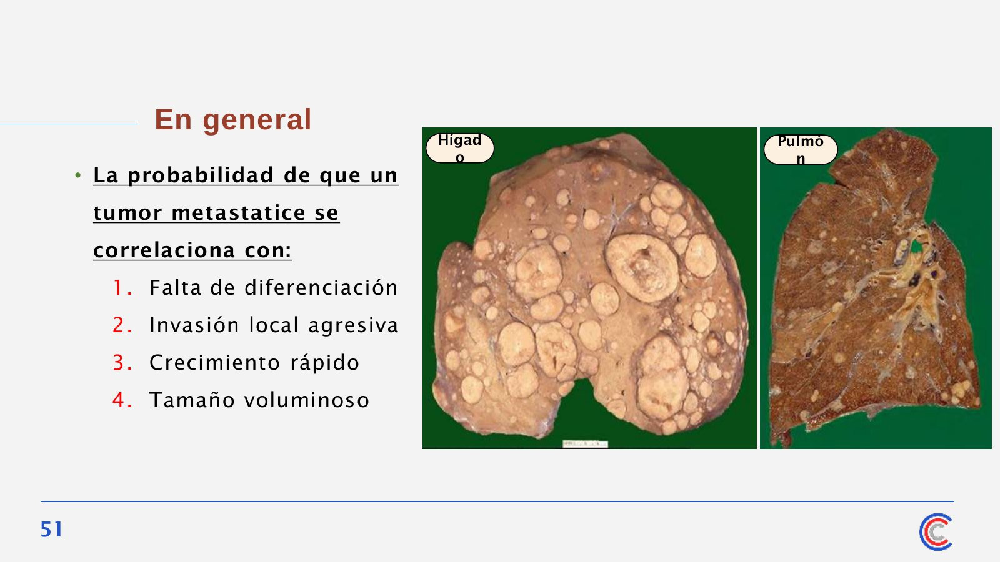
Final 21/02/2024 (transcrição digitada): "Tipo de diseminación metastásica de un tumor pulmonar" → Hematógena (as metástases no pulmão chegam pelas cavas).
Transcrição de alunos: "Vía de transmisión más común de los carcinomas" → Linfática
2.9 Gradación y estadificación · TNM
| Gradación | Estadificación | |
|---|---|---|
| Mide | grado de diferenciación de las células (y nº de mitosis, rasgos arquitecturales) | extensión de la propagación del tumor en el organismo |
| Base | semejanza con las células sanas | tamaño de la lesión primaria · ganglios · metástasis hematógenas |
| Categorías | 2 (bajo / alto) a 4 grados | sistema TNM |
| Quién la hace | el patólogo: es histológico | clínica + imagen + patología: es clínico |
| Valor pronóstico | menor | mayor (Robbins) |
| Letra | Qué mide | Escala (slide) |
|---|---|---|
| T | tumor primario (tamaño / extensión local) | T0 lesión in situ · T1 a T4 conforme aumenta el tamaño |
| N | afectación de ganglios linfáticos regionales | N0 sin ganglios · N1 a N3 número y extensión crecientes |
| M | metástasis a distancia (hematógena) | M0 sin metástasis · M1 (M2) con metástasis |
Gradación responde outra pergunta: "quão feia é a célula?" (diferenciação, mitoses). É histológica. A estadificación (TNM) é clínica e pesa mais no prognóstico.
- Gradación = histológica (o patologista olha a diferenciação). Estadificación = clínica (tamanho, linfonodos, metástase). Ela troca as palavras.
- Os 3 critérios da estadificación já caíram como "cita": tamaño de la lesión primaria · propagación a ganglios linfáticos · presencia o ausencia de metástasis.
- No caso da mama: o T4 vem de a massa estar fixa à parede torácica (extensão), não só dos 4 cm. 4 cm sozinho seria T2. Linfonodo axilar = N1; nódulos pulmonares = M1.
- No slide, in situ = T0 (nas tabelas do AJCC aparece como Tis). Use o termo do slide na prova.
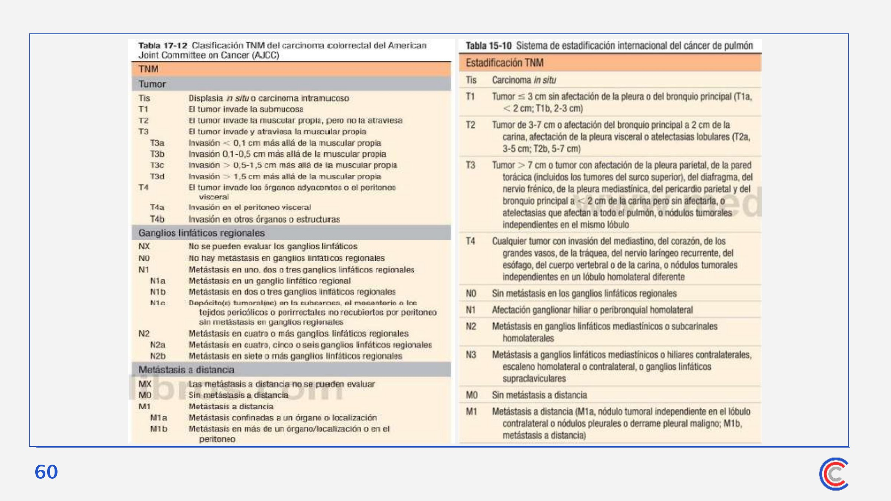
1. Cita: características morfológicas (microscópicas) de malignidad → Pleomorfismo · núcleos hipercromáticos (anisonucleosis) · mitosis atípicas · pérdida de polaridad / indiferenciación (anaplasia)
6. "________ es la magnitud en que las células neoplásicas se asemejan en su función y forma a las células correspondientes del parénquima sano." → Diferenciación
(transcrição digitada) "La falta de diferenciación se conoce como ______" → Anaplasia
19. Una masa sólida en la pared uterina se corresponde con un leiomiosarcoma bien diferenciado. Ante este dato, podemos afirmar que se trata de una masa: a) Maligna, epitelial, no encapsulada · b) Benigna, derivada de varias capas germinales · c) Maligna, de origen mesenquimático · d) Benigna, de crecimiento lento, encapsulado → c) Maligna, de origen mesenquimático
25. Mujer de 48 años: masa no dolorosa de 4 cm en la mama derecha, que parece fijada a la pared torácica; otra masa de 2 cm en la axila; radiografía con múltiples nódulos de 0,5 a 2 cm en ambos pulmones. ¿TNM? T1N1M0 · T2N1M0 · T4N1M1 → T4N1M1
(transcrição digitada) Criterios usados para la estadificación de tumores → Tamaño de la lesión primaria · propagación a ganglios linfáticos · presencia o ausencia de metástasis
(transcrição digitada) Acúmulo abundante de colágeno en neoplasia → Desmoplasia
Fontes: Examen Final Complementario 21/02/2024 (fotos das págs. 1–4 e transcrição digitada das págs. 104–110 das provas antigas); transcrição de alunos (Clase de Anatomía Patológica). Na foto, a pergunta 25 diz "axila izquierda"; a resposta marcada pela Dra. é T4N1M1.
2.10 Casos resueltos · raciocínio passo a passo
Mulher de 45 anos com sangramento e útero aumentado. A peça mostra um nódulo de 12 cm, mal delimitado, com áreas de necrose; ao microscópio, células fusiformes de músculo liso com núcleos atípicos e muitas mitoses.
1) Origem e comportamento?
Mesenquimático (músculo liso) e maligno (mal delimitado, atipia, mitoses).
2) Nome?
Leiomiosarcoma. O benigno equivalente, bem delimitado, seria o leiomioma.
3) E se o laudo dissesse "bien diferenciado"?
Continua maligno mesenquimático: diferenciação muda o grau, não o tipo.
4) Via de metástase esperada?
Hematógena (característica dos sarcomas), com pulmões como alvo frequente.
Mulher de 32 anos com Papanicolaou alterado. A biópsia mostra atipia em todo o espesor do epitélio escamoso, sem ultrapassar a membrana basal.
1) Diagnóstico?
Carcinoma in situ (neoplasia preinvasiva).
2) Pode ter metástase?
Não: sem romper a membrana basal não alcança vasos.
3) Se a atipia ocupasse só o terço inferior?
Displasia leve: pode regredir se a causa sumir.
4) Quando passa a invasor?
Quando as células rompem a membrana basal.
Mulher de 48 anos com massa de 4 cm na mama direita, fixa à parede torácica, linfonodo axilar de 2 cm e vários nódulos nos dois pulmões.
1) T?
T4: a fixação à parede torácica é extensão local.
2) N?
N1: linfonodo axilar comprometido.
3) M?
M1: nódulos pulmonares = metástase hematógena.
4) Isso é gradação ou estadificación?
Estadificación (clínica). A gradação viria da lâmina.
- Concepto de neoplasia según el slide: masa anormal de tejido, con crecimiento excesivo y descoordinado, autónomo, causado por mutaciones adquiridas que afectan a:
- A Varias células de distintos linajes
- B Una sola célula y a su progenie clónica
- C Todo el órgano de forma difusa
- D Las células del estroma reactivo
- Acúmulo abundante de colágeno en el estroma de una neoplasia, que le da consistencia pétrea (escirro):
- A Desmoplasia
- B Anaplasia
- C Metaplasia
- D Displasia
- El componente que determina la clasificación y el comportamiento biológico del tumor es:
- A El estroma reactivo
- B Los vasos sanguíneos
- C Las células inmunitarias
- D El parénquima tumoral
- Una masa sólida en la pared uterina se corresponde con un leiomiosarcoma bien diferenciado. Podemos afirmar que se trata de una masa:
- A Maligna, epitelial, no encapsulada
- B Benigna, derivada de varias capas germinales
- C Maligna, de origen mesenquimático
- D Benigna, de crecimiento lento, encapsulado
- Tumor maligno derivado del epitelio que adopta un patrón glandular:
- A Adenoma
- B Adenocarcinoma
- C Carcinoma epidermoide
- D Cistoadenoma
- ¿Cuál de los siguientes tumores es MALIGNO a pesar del sufijo "-oma"?
- A Melanoma
- B Leiomioma
- C Condroma
- D Lipoma
- Tumor de glándula salival con componentes epiteliales dispersos en un estroma mixoide con islotes de cartílago, originado de un solo clon:
- A Teratoma
- B Hamartoma
- C Coristoma
- D Adenoma pleomorfo (tumor mixto)
- Teratoma quístico del ovario que se diferencia sobre todo de las líneas ectodérmicas, lleno de pelos y glándulas sebáceas:
- A Struma ovarii
- B Cistoadenoma papilar
- C Quiste dermoide
- D Hamartoma
- Nódulo de tejido pancreático normal en la submucosa del estómago:
- A Hamartoma
- B Coristoma
- C Adenoma
- D Teratoma
- Masa desorganizada benigna formada por células propias del lugar afectado, por ejemplo en el pulmón:
- A Hamartoma
- B Coristoma
- C Teratoma
- D Pólipo
- La falta de diferenciación de las células neoplásicas se conoce como:
- A Displasia
- B Metaplasia
- C Desmoplasia
- D Anaplasia
- Relación núcleo-citoplasma típica de una célula anaplásica:
- A 1:4
- B 1:6
- C 1:1
- D 1:10
- Sobre las mitosis en las neoplasias, marca la correcta:
- A La presencia de mitosis indica siempre malignidad
- B Las figuras mitóticas atípicas y grotescas son más características de malignidad que la simple presencia de mitosis
- C Los tumores benignos no presentan mitosis
- D Las mitosis tripolares son frecuentes en tejidos normales
- Carcinoma broncógeno que produce corticotropina y causa síndrome de Cushing. Esto refleja:
- A Función nueva e imprevista de células anaplásicas (síndrome paraneoplásico)
- B Buena diferenciación del tumor
- C Metástasis a la hipófisis
- D Hiperplasia suprarrenal primaria
- Se realiza una biopsia cervical con carcinoma in situ. El concepto de carcinoma in situ corresponde a una lesión que se caracteriza por:
- A Ausencia de atipia marcada
- B Baja incidencia de metástasis
- C Crecimiento desordenado en todo el espesor epitelial
- D Membrana basal intacta
- Sobre la displasia, marca la INCORRECTA:
- A Es un crecimiento desordenado, principalmente en epitelios
- B La leve o moderada puede revertir si desaparece la causa
- C Siempre evoluciona hacia el cáncer
- D Presenta pleomorfismo y núcleos hipercromáticos
- Tumor benigno que, a diferencia de la mayoría, NO suele encapsularse:
- A Lipoma
- B Hemangioma
- C Leiomioma
- D Adenoma hepático
- Neoplasias malignas que producen invasión temprana pero casi nunca metastatizan:
- A Gliomas y carcinomas basocelulares de la piel
- B Sarcomas y melanomas
- C Carcinomas de ovario y de mama
- D Linfomas y leucemias
- Vía más habitual de diseminación inicial de los carcinomas:
- A Hematógena
- B Siembra de cavidades
- C Iatrogénica
- D Linfática
- Primer ganglio de una región linfática que recibe el flujo linfático del tumor primario:
- A Ganglio regional distal
- B Ganglio de Virchow
- C Ganglio linfático centinela
- D Ganglio satélite
- En la diseminación hematógena con invasión venosa, los órganos más afectados son:
- A Cerebro y hueso
- B Hígado y pulmones
- C Riñón y bazo
- D Ganglios y piel
- Masa gelatinosa en la cavidad peritoneal por carcinomas apendiculares u ováricos secretores de moco:
- A Seudomixoma peritoneal
- B Carcinomatosis linfática
- C Absceso peritoneal
- D Mesotelioma
- La gradación de un tumor se basa en:
- A El tamaño de la lesión primaria
- B La presencia de metástasis
- C La afectación de ganglios linfáticos
- D El grado de diferenciación de las células tumorales
- Mujer de 48 años: masa de 4 cm en la mama derecha fijada a la pared torácica, otra masa de 2 cm en la axila y múltiples nódulos en ambos pulmones. ¿Clasificación TNM?
- A T1N1M0
- B T2N1M0
- C T4N1M1
- D T2N0M1
- La estadificación es clínica: verdadero o falso.
- A Verdadero
- B Falso
- 1 · B Neoplasia é monoclonal: uma célula e sua progênie.
- 2 · A Já caiu no Final 21/02/2024. Exemplo do slide: carcinoma de mama.
- 3 · D O estroma dá suporte e influencia velocidade e propagação; o parênquima classifica.
- 4 · C Sarcoma = maligno mesenquimático. Copiada do Final 21/02/2024 (Q19).
- 5 · B Adenoma é o benigno; epidermoide imita epitélio escamoso.
- 6 · A Linfoma, melanoma, mesotelioma e seminoma: os quatro marcados em vermelho na tabela do slide.
- 7 · D Tumor mixto: 1 clone, 1 capa germinal, células epiteliais e mioepiteliais.
- 8 · C Struma ovarii é o teratoma com tecido tireoidiano.
- 9 · B Coristoma = resto heterotópico: tecido normal em local anormal.
- 10 · A Hamartoma pulmonar: cartilagem, epitélio e gordura do próprio pulmão, desorganizados.
- 11 · D Anaplasia = "formar hacia atrás", rasgo distintivo de malignidad.
- 12 · C Normal 1:4 a 1:6.
- 13 · B Mitose existe em tecido normal e hiperplasia; a atípica é a que pesa.
- 14 · A Hormônio estranho ao órgão = anaplasia → paraneoplásico.
- 15 · D Final 21/02/2024 (Q17). O critério é a membrana basal intacta.
- 16 · C Lesão precursora, mas não sempre evolui.
- 17 · B Exceção do slide: hemangioma (vasos entrelaçados).
- 18 · A Literal do slide de metástasis.
- 19 · D Carcinoma → linfática; sarcoma → hematógena.
- 20 · C É o que se biopsia para estadiar.
- 21 · B Drenagem portal → fígado; cavas → pulmões.
- 22 · A Siembra de cavidades por tumor mucosecretor.
- 23 · D Gradação = histológica; as outras três são da estadificação.
- 24 · C Final 21/02/2024 (Q25). T4 pela fixação à parede; N1 axila; M1 pulmões.
- 25 · A Verdadero. A gradação é a histológica.
Apunte Anatopato II
1. Cavidade oral
Lesões inflamatórias
Lesões proliferativas e neoplásicas
2. Glândulas salivares
Neoplasias
Raras (menos de 2% dos tumores). O risco de malignidade é inversamente proporcional ao tamanho da glândula: nas salivares menores chega a 70 a 90%.
3. Esôfago
Tumores
4. Estômago
Anatomia funcional
| Região | Célula | Produto / ponto-chave |
|---|---|---|
| Fundo e corpo | Parietais | HCl e fator intrínseco (FI). Perda (gastrite autoimune) leva a acloridria e anemia perniciosa. |
| Antro | Células G | Gastrina. Principal sede da gastrite por H. pylori (90%). |
| Cárdia / antro | Foveolares | Muco, uma das principais defesas contra o ácido. |
Úlceras de estresse
Em geral múltiplas e pequenas (menos de 1 cm), sem espessamento de vasos nem cicatriz (diferente das crônicas).
| Tipo | Associação |
|---|---|
| Úlcera de estresse | Pacientes críticos: choque, sepse, trauma grave. |
| Úlcera de Curling | Queimaduras ou traumas extensos; duodeno proximal. |
| Úlcera de Cushing | Doença intracraniana (estímulo vagal); alta incidência de perfuração. |
Gastrite crônica
Doença ulcerosa péptica
Gastropatias hipertróficas
Adenocarcinoma gástrico
Lesões precursoras e outros tumores
5. Doença de Crohn × colite ulcerosa
| Característica | Crohn | Colite ulcerosa |
|---|---|---|
| Localização | Qualquer parte do tubo digestivo; mais comum íleo terminal, válvula ileocecal e ceco. | Só cólon e reto. Sempre afeta o reto e sobe de forma contínua. |
| Padrão | Lesões salteadas (skip lesions), patognomônicas. | Contínuo. |
| Profundidade | Transmural (todas as camadas). | Mucosa e submucosa superficial. |
| Macroscopia | Aspecto de “pedra de calçamento”; espessamento da parede e estenose. | Úlceras extensas de base larga, pseudopólipos (ilhas de mucosa regenerativa); sem espessamento mural nem estenose. |
| Microscopia | GRANULOMAS NÃO CASEOSOS (40 a 60%; a ausência não exclui). | AUSÊNCIA de granulomas. |
| Complicações | Fístulas (entre alças, bexiga, pele), perfuração, estenoses fibrosantes no íleo terminal, má absorção (proteínas, B₁₂). | Megacólon tóxico (urgência). |
| Sintoma | Diarreia leve, em geral sem sangue; cólica que piora ao comer. | Diarreia com sangue e muco, urgência e tenesmo. |
| Câncer | Ambos: risco aumentado de adenocarcinoma de cólon na doença de longa data; vigilância essencial. | |
6. Pólipos e câncer colorretal
Pólipos
| Tipo | Pontos-chave |
|---|---|
| Não neoplásicos (hiperplásicos) | 60 a 90% dos pólipos; sem potencial maligno. Acúmulo de células epiteliais maduras. |
| Hamartomatosos (juvenil, Peutz-Jeghers) | Juvenil: benigno (a síndrome juvenil aumenta o risco). Peutz-Jeghers (mutação STK11) AUMENTA muito o risco de câncer colorretal, mama, ovário e pâncreas. |
| Inflamatórios (pseudopólipos) | Ligados à DII. O pólipo não é maligno, mas a inflamação crônica é fator de risco. |
| Adenomatosos (adenomas) | Lesões neoplásicas benignas mais frequentes; precursores do adenocarcinoma. Risco depende de: tamanho (mais de 2 cm), displasia de alto grau e componente viloso. |
| Adenoma | Morfologia | Risco |
|---|---|---|
| Tubular | 75% dos adenomas; pequenos, geralmente pediculados. | Menor. |
| Túbulo-viloso | Mistura dos padrões. | Intermediário. |
| Viloso | Maior e séssil; o menos comum. | MAIOR (cerca de 40%). |
| Séssil serrilhado | Parece hiperplásico, mas com células serrilhadas no fundo das criptas; cólon direito. | Precursor de CCR pela via alternativa (instabilidade de microssatélites). |
Adenocarcinoma colorretal (CCR)
7. Fígado
Benignas
Malignas
Fonte: “Apunte de Estudos: Anatopato II · 6º Semestre · Dra. Eliana Chamorro” (PDF, 15 páginas), organizado aqui por aparelho. É um apunte de estudo de aluno sobre a matéria da professora, não são os slides dela; confira com as provas originais do final.
Repaso + simulado
Sección I · Cita con letra legible
Gabarito
Gabarito
Gabarito
Sección II · Completa los enunciados
Gabarito
Gabarito
Gabarito
Gabarito
Revisão da véspera · Inflamación
Mesmo formato da véspera da 2ª parcial, só com inflamação aguda.
| Se a questão diz… | Responda |
|---|---|
| Sinais da vasodilatação | Rubor y calor |
| 2 alterações vasculares | Vasodilatación y aumento de permeabilidad |
| Mediador da fase transitória imediata / alergia | Histamina |
| Onde migram os leucócitos | Vénulas poscapilares |
| Na luz / no tecido | Marginación, rodamiento, adhesión / transmigración, quimiotaxia |
| Rodamento / adesão firme / transmigração | Selectinas / integrinas / inmunoglobulinas (PECAM-1) |
| Quimiotáticos endógenos | IL-8, C5a, LTB4 |
| Dor / febre | PG y bradicinina / IL-1, TNF, IL-6, PG |
| Opsonina / MAC / anafilotoxinas | C3b / C5b-9 / C3a y C5a |
| Neutrófilo mata S. pneumoniae com | Peróxido de hidrógeno (+ MPO → HOCl) |
| Queimadura com bolhas | Inflamación serosa |
| Pericardite pão com manteiga | Inflamación fibrinosa |
| Perda de epitélio de superfície | Úlcera |
| Exsudado × transudado | Proteína alta, turvo, células / proteína baixa, claro, sem células |
| Primer cambio vascular | Vasoconstricción transitoria (não é característico) |
| "Vénulas precapilares" | Distractor: é vénulas poscapilares |
| Serotonina | Só aumento de permeabilidad (NÃO vasodilata) |
| LTB4 × LTC4/D4/E4 | Quimiotaxia × aumento de permeabilidad ("CDE", a ponte) |
| Migración × quimiotaxia | A través del endotelio × por los tejidos hacia la lesión |
| Mediadores da fagocitose (por extenso) | Especies reactivas de oxígeno, óxido nítrico, enzimas lisosómicas |
| Líquido tipo trasudado numa inflamação | Inflamación serosa (ampollas, infecciones virales) |
Simulado · inflamación aguda
- Hombre de 30 años se clava una astilla. A las 2 horas la zona está roja y caliente. El mecanismo responsable del rubor y el calor es:
- A Aumento de la permeabilidad de vénulas poscapilares
- B Vasodilatación arteriolar por histamina
- C Quimiotaxia de neutrófilos por C5a
- D Contracción de miofibroblastos
- ¿Cuál de las siguientes secuencias del trayecto leucocitario es correcta?
- A Marginación, rodamiento, adhesión, transmigración, quimiotaxia
- B Adhesión, marginación, rodamiento, quimiotaxia
- C Rodamiento, transmigración, adhesión, fagocitosis
- D Quimiotaxia, marginación, adhesión, rodamiento
- Un niño con infecciones bacterianas recurrentes presenta leucocitosis marcada pero pocos neutrófilos en los tejidos. Se demuestra un defecto en la adhesión firme de los leucocitos al endotelio. La molécula deficiente es:
- A E-selectina
- B PECAM-1
- C IL-8
- D β2-integrina
- Teniendo en cuenta los siguientes mediadores y sus efectos, marque la alternativa correcta:
- A Leucotrieno B4 – vasodilatación
- B IL-6 – dolor
- C C3b – opsonización
- D Prostaciclina – aumento de permeabilidad
- Teniendo en cuenta los siguientes mediadores y sus efectos, marque la alternativa correcta:
- A C5b-9 – opsonización
- B TNF – fiebre
- C Leucotrieno C4 – vasodilatación
- D Prostaciclina – vasoconstricción
- Paciente con fiebre reumática presenta roce pericárdico. En la autopsia el pericardio muestra superficies rugosas con filamentos amarillentos. En la MO se espera:
- A Red eosinófila de fibrina
- B Líquido con bajo contenido de células
- C Masa de neutrófilos necróticos con nivel hidroaéreo
- D Pérdida de epitelio superficial
- Paciente con insuficiencia cardíaca y derrame pleural bilateral. El líquido es claro, con densidad baja y escasas células. Corresponde a:
- A Exudado por aumento de permeabilidad
- B Exudado purulento
- C Exudado fibrinoso
- D Trasudado por aumento de presión hidrostática
- Un paciente con artritis toma un AINE (inhibidor de COX). ¿Qué mediador disminuye y qué efecto se espera?
- A Leucotrienos; menor quimiotaxia
- B Histamina; menor edema
- C Prostaglandinas; menor dolor y fiebre
- D Bradicinina; menor lisis celular
- En una infección viral aguda, las primeras células inflamatorias en llegar pueden ser:
- A Neutrófilos
- B Linfocitos
- C Eosinófilos
- D Células plasmáticas
- Una lesión inflamatoria aguda limitada, de corta duración, con escasa destrucción tisular en un órgano con células capaces de regenerarse evolucionará a:
- A Resolución completa
- B Fibrosis
- C Inflamación crónica
- D Absceso
- Verdadero o falso: El fenómeno de marginación es un proceso de redistribución leucocitaria por el cual los leucocitos se sitúan en la periferia del flujo sanguíneo.
- A Verdadero
- B Falso
- Verdadero o falso: La inhibición selectiva de la vía de la ciclooxigenasa influirá negativamente en la formación de leucotrienos y prostaglandinas.
- A Verdadero
- B Falso
- Verdadero o falso: La contracción de las células endoteliales es el mecanismo más frecuente de aumento de permeabilidad y afecta capilares y arteriolas.
- A Verdadero
- B Falso
- Verdadero o falso: La bradicinina es un mediador preformado derivado de los mastocitos.
- A Verdadero
- B Falso
- 1 · B Rubor e calor = vasodilatação. A permeabilidade gera o tumor (edema).
- 2 · A Resposta: Marginación, rodamiento, adhesión, transmigración, quimiotaxia.
- 3 · D Adesão firme = integrinas. Selectina é rodamento; PECAM-1 (inmunoglobulina) é transmigração.
- 4 · C LTB4 = quimiotaxia; IL-6 = febre; prostaciclina = vasodilatação. (Versão idêntica caiu na turma D.)
- 5 · B C5b-9 = lise (MAC); LTC4 = vasoconstrição/broncoespasmo; prostaciclina = vasodilatação. (Caiu na turma C.)
- 6 · A Pericarditis "pan con mantequilla" = inflamação fibrinosa; se não for removida, organiza em cicatriz.
- 7 · D Transudado = desequilíbrio hidrostático/osmótico, sem inflamação.
- 8 · C COX produz prostaglandinas. Leucotrienos vêm da lipoxigenase e não caem com AINE.
- 9 · B Exceção do slide.
- 10 · A Resposta: Resolución completa.
- 11 · A Numa prova antiga o enunciado dizia "migración" no lugar de "marginación", e aí era F. Leia a palavra.
- 12 · B Só prostaglandinas (e tromboxano). Leucotrienos vêm da lipoxigenase. Caiu assim numa recuperatória.
- 13 · B É o mais frequente, mas afeta vénulas poscapilares; NO afecta capilares ni arteriolas.
- 14 · B Bradicinina é derivada do plasma (sistema de cininas). Preformados celulares: histamina, serotonina, enzimas lisossomais.
Banco Robbins das provas antigas
Metade do PDF "Provas antigas" são prints do banco de questões do Robbins (cap. 3, Inflamación y reparación), com a alternativa marcada. A Chamorro tira casos daí literalmente: a olla con agua hirviendo, o S. pneumoniae com peróxido, a β2-integrina, a toracocentese e o COX-2 caíram iguais. Separei as que são de inflamação aguda (as de reparação e crônica ficam para a próxima parcial). Enunciados resumidos do OCR, alternativas e gabarito conferidos com a marcação do PDF.
- Hombre de 22 años, dolor en fosa ilíaca derecha, apéndice hinchado, eritematoso, cubierto por exudado amarillento. El dolor es predominantemente resultado de ¿qué dos mediadores?
- A C3b e IgG
- B Prostaglandina y bradicinina
- C IL-1 y TNF
- D Histamina y serotonina
- E Leucotrienos y HPETE
- Mujer de 58 años, tos y fiebre 3 días, infiltrado en lóbulo inferior derecho, cultivo con Streptococcus pneumoniae. La eliminación se lograría más efectivamente por la generación de ¿qué sustancia por la principal célula inflamatoria?
- A Factor activador de plaquetas
- B Prostaglandina E2
- C Calicreína
- D Leucotrieno B4
- E Peróxido de hidrógeno
- Estudio de pacientes con infección faríngea de 3 días: hinchazón, eritema y exudado purulento. ¿Tipo de inflamación?
- A Granulomatosa
- B Gangrenosa
- C Aguda
- D En resolución
- E Crónica
- Hombre de 20 años con uretritis por Neisseria gonorrhoeae; numerosos neutrófilos en el exudado. Estos neutrófilos experimentan diapédesis hacia el sitio de infección en respuesta principalmente a:
- A Complemento (C5a)
- B Histamina
- C Prostaglandina
- D Factor de Hageman
- E Bradicinina
- Neumonía tratada con antibiótico; 2 semanas después persiste la fiebre y la Rx muestra una densidad redondeada de 3 cm con nivel hidroaéreo. ¿Qué ocurrió?
- A Cicatriz hipertrófica
- B Regeneración
- C Carcinoma broncogénico
- D Formación de abscesos
- E Inflamación crónica
- Hombre de 25 años con astilla en el dedo; en 3 días la zona se enrojece, hincha y duele, y los neutrófilos migran. ¿Qué sustancia expresada en las células endoteliales es más importante para promover esta reacción?
- A Interferón γ
- B E-selectina
- C Factor de Hageman
- D Lisozima
- E Prostaciclina
- Hombre de 37 años con náuseas, hematemesis; endoscopia: lesión de 1,5 cm en antro gástrico con pérdida de la superficie epitelial.
- A Absceso
- B Serositis
- C Granuloma
- D Gangrena
- E Úlcera
- Mujer de 19 años pasa el día al sol sin protector; a la noche tiene la cara roja. ¿Qué cambio explica el color rojo?
- A Agregación de neutrófilos
- B Hemorragia
- C Vasodilatación
- D Edema
- E Hemólisis
- Rinitis alérgica cada primavera: mucosa nasal roja e hinchada. ¿Mediador principal?
- A Histamina
- B C3b
- C PAF
- D TNF
- E IgG
- Hombre de 45 años carga ladrillos todo el día y toma ibuprofeno. ¿Qué proceso disminuye el medicamento en sus brazos?
- A Trombosis
- B Necrosis
- C Fibrinólisis
- D Dolor
- E Formación de cicatrices
- ¿Qué fragmento del complemento actúa como opsonina eficaz, adhiriéndose a las bacterias para que los fagocitos las engullan?
- A Glutatión peroxidasa
- B C3b
- C IgM
- D P-selectina
- E NADPH oxidasa
- Derrame pleural bilateral en insuficiencia cardíaca; toracocentesis de 500 ml. ¿Qué característica indica con más probabilidad que es un TRASUDADO?
- A Aspecto nublado
- B Alto contenido de proteínas
- C Presencia de fibrina
- D Gran tamaño del derrame
- E Recuento bajo de leucocitos
- Derrame pleural turbio con 15.500 leucocitos/µl, 98% neutrófilos. ¿Tipo de inflamación?
- A Serosa
- B Fibrinosa
- C Purulenta
- D Crónica
- E Granulomatosa
- Tras un vuelo largo, una mujer sana no puede ponerse los zapatos; sin dolor. ¿Explicación?
- A Aumento de la presión hidrostática venosa
- B Bebidas en primera clase
- C Trombosis de vena femoral
- D Celulitis
- Hombre con derrames pleurales bilaterales y edema con fóvea en muslos, sin fiebre. ¿Hallazgo de laboratorio más probable?
- A Glucosuria
- B Neutrofilia
- C Anemia
- D Hipoalbuminemia
- E Hipernatremia
- Hombre de 35 años, disnea 24 h, derrame pleural; 500 ml de líquido amarillo ligeramente turbio con múltiples neutrófilos. ¿Qué mecanismo contribuye más?
- A Vasoconstricción arteriolar
- B Contracción endotelial
- C Inhibición de la adhesión plaquetaria
- D Obstrucción linfática
- E Liberación de lisosomas por neutrófilos
- Niño con infecciones piógenas recurrentes; biopsia con microorganismos pero muy pocos neutrófilos; la función muestra defecto en el RODAMIENTO. ¿Molécula defectuosa?
- A C3b
- B Integrinas
- C LTB4
- D NADPH oxidasa
- E Selectinas
- Niña de 4 años con infecciones por S. aureus desde la lactancia; ausencia de producción de β2-integrina. ¿Qué alteración es más probable?
- A Adhesión neutrofílica inadecuada al endotelio
- B Menor producción de radicales libres (ERO)
- C Reducción de la fagocitosis de bacterias opsonizadas
- D Fracaso del proceso en el cual los leucocitos se colocan sobre el endotelio de forma transitoria
- En un experimento, se inoculan bacterias en tejido perfundido; los leucocitos salen de los vasos y migran hacia ellas. ¿Qué media el desplazamiento?
- A Quimiocinas
- B Bradicinina
- C C3a
- D Histamina
- E Prostaglandinas
- Niño con déficit de mieloperoxidasa e infecciones bacterianas recurrentes. ¿Qué proceso está reducido?
- A Elaboración de H₂O₂
- B Migración por déficit de complemento
- C Consumo de oxígeno
- D Formación de radical hipoclorito (HOCl)
- E Producción de prostaglandinas
- Grupo que recibe inhibidor de COX-2, con insuficiencia cardíaca leve y artritis de pequeñas articulaciones. ¿Qué refiere el grupo del fármaco?
- A Mayor tumefacción de tobillos
- B Reducción del dolor artrítico
- C Mayor susceptibilidad a hematomas
- D Más brotes de asma
- E Menor gravedad de la urticaria
- F Numerosos episodios febriles
- Mujer de 19 años con faringitis, eritema y edema; recibe naproxeno. ¿Qué elemento de la respuesta aguda afecta más?
- A Quimiotaxia
- B Migración
- C Leucocitosis
- D Fagocitosis
- E Vasodilatación
- Se inoculan bacterias en sangre anticoagulada; son fagocitadas por neutrófilos o sufren lisis. ¿Qué componente del plasma facilita estos efectos?
- A Fibrina
- B Calicreína
- C Complemento
- D Plasmina
- E Trombina
- Mujer toca una olla con agua hirviendo; a las 2 h eritema y pequeñas ampollas en las yemas de los dedos.
- A Serosa
- B Fibrinosa
- C Granulomatosa
- D Purulenta
- E Úlceras
- Mujer de 24 años con salpingitis aguda (trompa roja, distendida, llena de líquido), leucocitosis con 75% neutrófilos. En la trompa resecada se observa:
- A Proliferación fibroblástica
- B Células de Langhans
- C Infiltrados mononucleares
- D Necrosis por licuefacción
- E Metaplasia escamosa
- Hombre de 68 años, 800 ml de líquido pleural amarillento y turbio, 98% neutrófilos, cocos gram+ en racimos.
- A Absceso
- B Inflamación crónica
- C Edema
- D Inflamación fibrinosa
- E Exudado purulento
- F Derrame seroso
- Mujer de 87 años con neumonía; una semana después sin fiebre. Evolución más probable:
- A Inflamación crónica
- B Cicatrices fibrosas
- C Neoplasia
- D Úlceras
- E Resolución
- Mujer de 29 años con CIV, fiebre 3 semanas, lesión en anillo de 3 cm con contenido licuado en lóbulo parietal. ¿Qué acción celular la produjo?
- A Óxido nítrico por macrófagos
- B Inmunoglobulinas por linfocitos B
- C Liberación de enzimas lisosómicas por neutrófilos
- D Prostaglandinas por endotelio
- E Interferón γ por linfocitos T
- Hombre de 41 años con meningitis (LCR con 94% neutrófilos) y fiebre de 39,2 °C. Mediador más probable de la fiebre:
- A TNF
- B Bradicinina
- C Histamina
- D LTB4
- E Óxido nítrico
- 1 · B Resposta: Prostaglandina y bradicinina.
- 2 · E A mieloperoxidasa transforma o H₂O₂ num oxidante potente que mata a bactéria; a célula é o neutrófilo. Um aluno marcou LTB4 (quimiotático): errado.
- 3 · C Resposta: Aguda.
- 4 · A C5a é quimiotático para neutrófilos.
- 5 · D Necrose licuefactiva com pus em cavidade.
- 6 · B Selectinas endoteliais iniciam o rodamento.
- 7 · E Resposta: Úlcera.
- 8 · C Resposta: Vasodilatación.
- 9 · A Mesma lógica para picada de abelha com estridor em minutos e alergia a gatos.
- 10 · D Resposta: Dolor.
- 11 · B Resposta: C3b.
- 12 · E Na prova ela inverteu: "¿qué indica EXUDADO?" → alto contenido de proteínas.
- 13 · C Resposta: Purulenta.
- 14 · A Edema por transudado, sem inflamação.
- 15 · D Menor pressão oncótica → transudado.
- 16 · B Resposta: Contracción endotelial.
- 17 · E Compare com R.18: se o defeito é na adesão firme, a resposta vira integrinas.
- 18 · A d descreve rodamento (selectinas).
- 19 · A Resposta: Quimiocinas.
- 20 · D A MPO converte H₂O₂ em HOCl. O H₂O₂ continua sendo produzido.
- 21 · B Resposta: Reducción del dolor artrítico.
- 22 · E PGs são vasodilatadoras.
- 23 · C C3b (fagocitose) e C5b-9 (lise). Na turma D a resposta anotada foi "complejo de ataque de membrana".
- 24 · A Resposta: Serosa.
- 25 · D Resposta: Necrosis por licuefacción.
- 26 · E Resposta: Exudado purulento.
- 27 · E Resposta: Resolución.
- 28 · C Abscesso cerebral: licuefação por enzimas dos neutrófilos.
- 29 · A Em outra versão (faringite estreptocócica, pirógenos) a resposta foi prostaglandinas: IL-1/TNF agem no hipotálamo via PGE2.